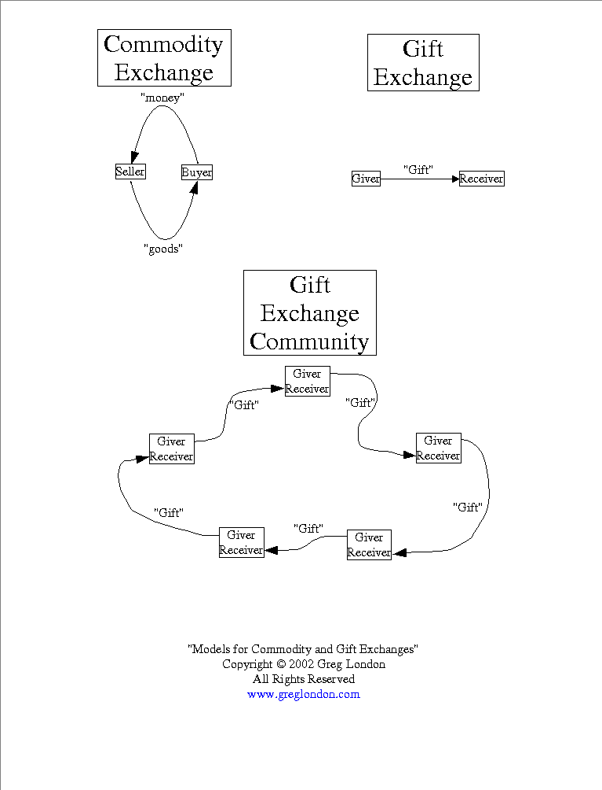
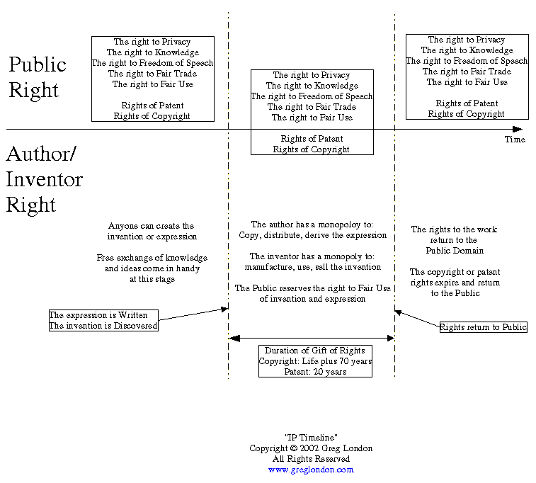
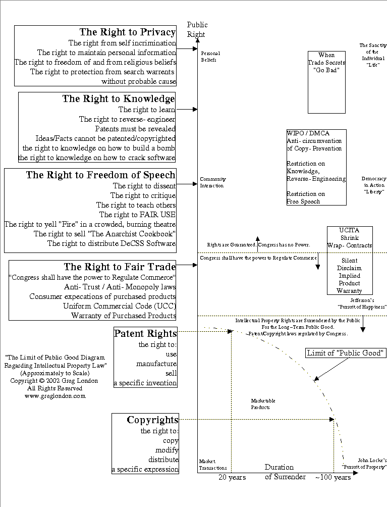
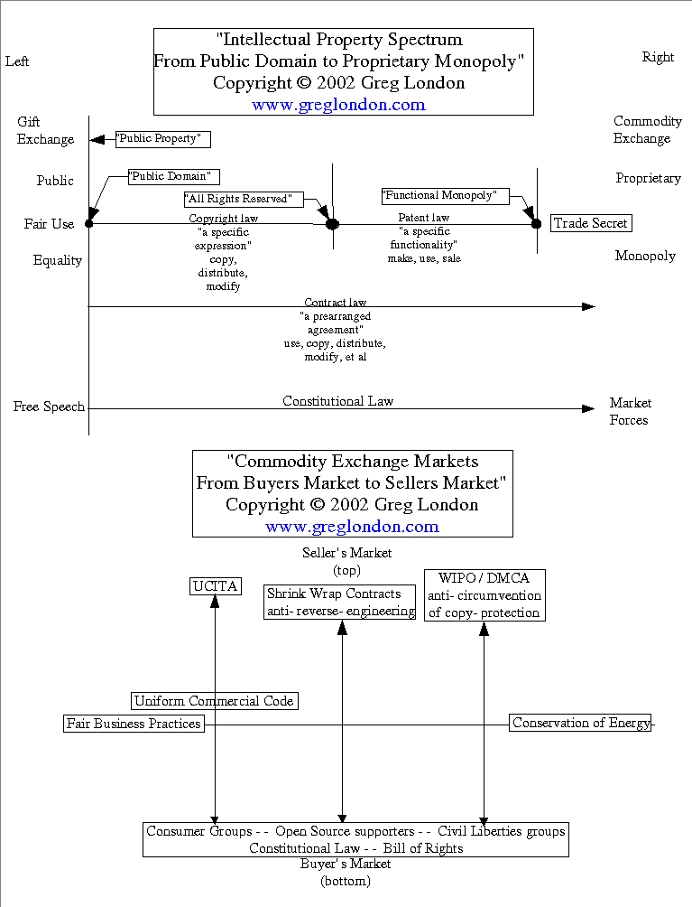
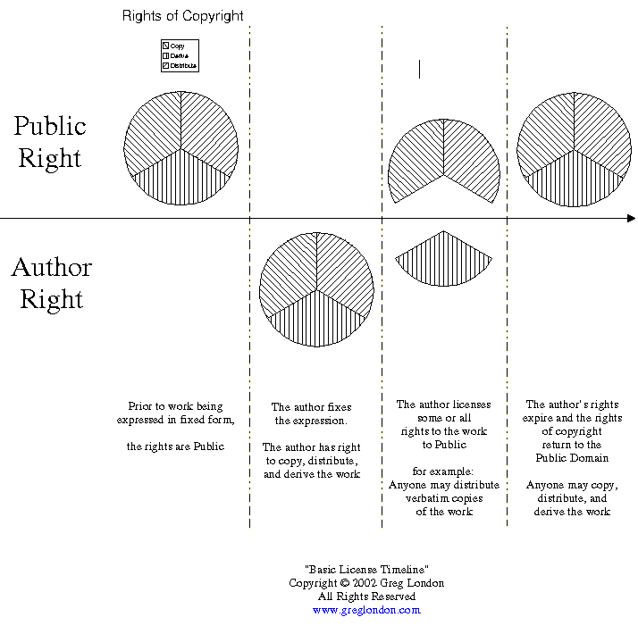

"The Power Of Giftware"
Copyright © 2002 Greg London
You may copy and distribute verbatim copies of this file in its original electronic form. All other rights are reserved by the author.
DISCLAIMER:
"AS IS"
NO WARRANTY
THIS DOCUMENT IS PROVIDED "AS IS" WITHOUT WARRANTY OF ANY KIND, EITHER EXPRESSED OR IMPLIED, INCLUDING, BUT NOT LIMITED TO, THE IMPLIED WARRANTIES OF MERCHANTABILITY AND FITNESS FOR A PARTICULAR PURPOSE.
UNDER NO CIRCUMSTANCES WILL THE AUTHOR BE HELD RESPONSIBLE OR LIABLE FOR DAMAGES ARISING OUT OF THE USE OR READING OF THIS DOCUMENT.
WARNING: I am not a lawyer. This is not legal advice. This is not a substitute for legal advice. Intellectual property law is complex and ever changing, and this document is not sufficient for any legal decision-making process. You should obtain competent legal advice for your situation, and you MUST NOT rely on this document.
In short, GET A LAWYER.
PART 1: An Introduction to the Power of Giftware
Part 2: The Specific Laws Affecting Giftware
Part 3: A Usable Giftware Model
END OF TABLE OF CONTENTS
Part 1: An Introduction to the Power of Giftware
My goal is to create a good, usable, working model of intellectual property. A working model would not only explain historical decisions up to the present, but it would also serve as a basis for future decisions, regardless of technological development. The historically recent addition of computer technology has caused some people to reinterpret intellectual property laws in new ways. A good model would remain valid regardless of what new technology advance occurs. A good model would actually allow people to properly apply intellectual property laws as new technology begins, rather than having to look back in hindsight to understand and correct what happened.
The first goal of this document is to present such a model. A secondary outcome of creating this model is that it will allow the reader to view the current mass of intellectual property laws in a new light, and possibly cause changes in those laws. A good model would allow citizens to evaluate their government's current body of intellectual property laws. And if those laws are found to be misaligned, the model should provide citizens with clear and objective changes to bring the law into alignment.
But the final and primary goal of this document is to present a usable model for the benefit of Open Source projects.
The current Open Source phenomenon can be traced by to 1984 when Richard M. Stallman posted the source code for his text editor, Emacs, on the internet. Mr. Stallman created a work in the form of a software program, and he allowed anyone to download his work for free (He also sold tape copies for $150). As time went on, more people followed this idea, adding their works to those freely available on the internet. A snowball effect occurred, and this phenomenon has produced whole operating systems and applications, massive amounts of code, all freely available on the internet.
But the Open Source movement remains an ethereal success. There are few models for this inexplicable phenomenon. The current body of Open Source leaders cite various reasons for their success. The Free Software Foundation claims it's about Freedom. The Open Source Initiative claims it's about Openness. Eric S. Raymond wrote an article called "The Cathedral and the Bazaar" that claimed it's about Development Style (Bazaar style versus Cathedral style). Mr. Raymond also wrote another article called "Homesteading the Noosphere" whose title claimed that it's about getting a good reputation for good code.
However, when newcomers attempt to appy these models of Open Source to their project, some of them fail miserably. A good model, a good working theory, a good understanding would allow new leaders to apply the model to new areas and guarantee relative success in that endeavor. It would also allow people to recognize when the Open Source model is not suited for their project, so they can avoid using the wrong tool for the job at hand.
The primary goal of this document is to understand what's at the heart of a successful Open Source project. The goal is to understand and model this success so that it can be given away to new projects and new leaders. Like giving away the source code to a program, this document intends to give the source of the Open Source projects to the world so that everyone can freely use it.
I recently started reading "The Gift - Imagination and the Erotic Life of Property" by Lewis Hyde. The author wrote the book to explore how he, a writer in various arts and fields, could create a work of art, a gift of himself to the world, and still pay the bills in a world of commodity exchange. People in the Open Source community will recognize this as a nagging question that will not go away. "The Gift" starts out by looking at gift exchange as a phenomenon all to itself and attempts to define what it is (and what it is not). As I read the book, I kept thinking "This is the heart, the essence, that drives Open Source."
I highly recommend that anyone contemplating being active in an Open Source project, especially someone who intends to become a leader in the arena, to read this book.
Eric S. Raymond mentions "Gift Exchange" in "Homesteading the Noosphere" as being a part of the Open Source movement, but he looks at it as secondary in power to the drive behind getting a good reputation. As I read "The Gift - Imagination and the Erotic Life of Property", I started to see the power of a "Gift Exchange Community" and how it differed greatly from a "Commodity Exchange" transaction. Mr Raymond mentions some of the abuses that occur in a Gift Exchange, but as I read "The Gift - Imagination and the Erotic Life of Property", I could see that elements of a pure Gift Exchange had been part of the spark for a number of successful Open Source projects in the past.
I believe it is the concept of Gift Exchange applied to software, hardware, and documentation that must be at the heart of a successful Open Source project. I created the term "Giftware" to capture this concept.
To define a "Gift Exchange", it becomes clearer when the term is contrasted by its opposite, the "Commodity Exchange". Here are the definitions of both.
A true commodity exchange is a trade between two people. I go into a store and exchange money for a book, or money for food, or money for clothing, or money for shelter. Money does not have to be involved in a commodity exchange. Jack trades with another man, the family cow for a handful of magic beans. A street vendor might offer to exchange old lamps for new. But the quality of a commodity exchange is "this for that". In a commodity exchange, the two people exchange goods, and that is the end of the transaction.
In commodity exchange, you could visualize a scale that measures "this" on one side and "that" on the other. A commodity exchange would have these balance at the end of the transaction. Now, the real world has "Buyer's Markets" and "Seller's Markets" where the scale tips to one side or the other, but these are still expressions of the Commodity Exchange model. The ideal situation has the scale balance. A Commodity Exchange is simply an expression of the conservation of energy applied to economic transactions. Energy isn't created or destroyed, it simply changes hands.
The internal motivations of the individuals are irrelevant to the transaction as a whole. A seller may be motivated by profit, greed, honor, craftmanship, or the motivation that their product will cure cancer. A buyer may be motivated by want, need, desire, scarcity, Hunger Pangs, or the motivation that their purchase helps support cancer research. A buyer and seller may trade objects which they deem worthless for something they deem invaluable. The individual drive is to enter a Commodity Exchange for personal gain, in whatever subjective measure that is for the individual.
Rather than focus on the subjective measures of the individual, the model of Commodity Exchange focuses on the total transaction as measured in the objective scale of a Free Market. A Free Market is one that has many buyers and sellers, and competition for both is relatively balanced. In the space of a Free Market, sellers will tend to sell their products with just enough profit margin to make it worth their while. Buyers will tend towards purchasing the product that balances their personal preferences between quality and price. The objective measure becomes money. The internal motivations of the actors becomes irrelevant. That Buyer Bob gave what he subjectively considered a pittance of money for something he considered invaluable is irrelevant to the objective fact that Bob paid $5 for a bottle of Aspirin to stop his migrane headache.
Bob exchanges $5 which approximates the value of the bottle of Aspirin in a Free Market. In this measure, energy is conserved.
The one sentence definition is:
Commodity Exchange: Two people trading goods of approximately equal value (value being measured in the objective currency of a Free Market), such that the transfer balances at the end of the transaction.
A true Gift Exchange is quite unlike a Commodity Exchange in several ways. Let's start with a definition:
Gift Exchange: a transaction between two people where one person (giver) gives the second person (receiver) some gift (of value), and the transaction ends with this unbalanced transfer of goods. The reciever does not reciprocate anything to the giver.
The term Gift Exchange can be confusing. "Exchange" can denote "a give and take", but a gift is strictly one way, from giver to reciever. A better way to think of "exchange" is to think of a "place where gifts can be given". This fits in line with meaning of "exchange" where a "Stock Exchange" is a place where people buy, sell, and trade stocks. A Gift Exchange, therefore, does not mean two people agreeing to buy each other a $20 dollar gift to exchange on Christmas.
A Gift is something given with no expectation of reciprocation, and a Gift Exchange is the "field" in which gifts are given and received.
This definition might lead one to believe that energy is not being conserved, and therefore there is no such thing as a true Gift Exchange. Or, if there is a Gift Exchange, it is not something that can support itself over a long period of time.
A Commodity Exchange balances within the transaction. Two people exchange goods, and a balance is maintained at the transaction level. A Gift Exchange can conserve energy too. But you have to look at the entire Gift Exchange community, over a period of time, to see the transactions balance.
For example, a barn-raising is a gift that a community can give to an individual farmer. The gift transaction benefits only the individual farmer. The single transaction leaves the balance of energy quite lopsided. But over time, you may see that farmer working as part of another barn-raising for someone else's benefit. It isn't required that the goods traded be the same, like a barn-raising for a barn-raising. People might pitch in to help someone who is too sick to harvest their crops. But a working Gift Exchange conserves energy within its community and doesn't require magical thinking to explain its existence.
The internal motivations of the giver and reciever is irrelevant to the gift being given with respect to the Gift Exchange field. The giver may be motivated to give the gift out of compassion, malice, charity, spite, or the motivation that the gift may feed a hungry person. The reciever may have the internal drive to demand the gift, accept the gift graciously, turn their nose up at the gift, or ask for more gifts. The objective measure of a gift is that the Giver gives the gift freely, without any requirement to do so, and the reciever recieves the gift free and clear, without any requirement to reciprocate in any way. The "energy" of the gift is the value of the gift as measured on the Free Market.
The following diagrams show a Commdity Exchange, a Gift Exchange, and a simple Gift Exchange Community.

So, a Commodity Exchange and a Gift Exchange both conserve energy. One balances in the transaction, and one balances within the community over time.
A Gift Exchange is not -BETTER- than a Commodity Exchange. They are both valid models because they both conserve energy. It's simply a matter of figuring out where to apply the models in real life.
The Commodity Exchange makes sense when strangers wish to conduct business and it is unlikely that they'll ever see each other again. The Gift Exchange takes time to balance out, and until that happens, energy will be lost, companies will go out of business, and people will go hungry. Over an infinite amount of time, the Gift Exchange will balance out, but mortgage payments are due on a monthly cycle. So there are times and places where you may choose one exchange over the other based on your commitments and your current situation.
A Gift Exchange makes sense where energy can balance out within a reasonable amount of time. A Gift Exchange also requires a community through which the individual transactions can flow. It also requires that the person starting the Gift Exchange is completely willing to give their gift away. While a Commodity Exchange is a model of energy stasis or balance, a Gift Exchange is a model of Momentum introduced into the community by an individual. The individual must be willing to completely surrender their gift to the community to allow the community to take that energy, transform it into something else, and pass that new gift along. For a Gift Exchange community to sustain itself, the momentum must be allowed to pass through the community unhindered. The gift may change forms from one person to the next, but the Momentum is maintained and possibly increased.
So, what is it about a Gift Exchange that will drive an Open Source project to success? It was so simple, that I didn't see it until I read "The Gift". It is so simple, that at first glance, some might disregard the power and effect that this wields.
A Gift Exchange builds community.
A buyer or seller will trade goods in a commodity exchange for whatever internal reason they have. Perhaps they're hungry and wish to buy some food. Perhaps they are a farmer and wish to sell the excess food that they grew. Perhaps they asked some outrageous price just to see if anyone would take it. Whatever the reasoning, the drive behind a buyer and seller is purely personal.
The giver gives a gift for whatever internal reason, whatever internal drive, they have. Perhaps they're feeling generous. Or perhaps they're feeling like a good intellectual challenge. Or perhaps they're feeling like they can write something better than anyone has ever written. Whatever the reasoning, the drive behind giving a gift is completely personal.
A Commodity Exchange ends with the transaction with all drives and effects remaining internal. A Gift Exchange may have its personal drives and effects, but it also has community building effect that operates outside the transaction and ties the individual giver with the entire community.
Once an individual gives a gift, momentum is created that can ripple through the entire community. One gift can spark an entire movement of gift giving. A gift that stays in motion through the community can strengthen that community and benefit it as a whole. The active members of a Gift Exchange community contribute to something that goes beyond their personal borders. This individual drive to contribute can bring together the combined energies of whole communities.
From a physics point of view, energy is conserved in both models. But from a human point of view, the ability to build communities can make a Gift Exchange more powerful than the individual transactions of a Commodity Exchange.
In "The Gift- The Erotic Life of Property", Lewis Hyde tells a story about two families who had spent an afternoon picnicing together. During their picnic, they discovered an ungainly looking wrench of the size one might expect to need when fixing a steam shovel. It was a completely useless object to either family. However they took it home with them, and it became a perpetual gift between the two families. Whoever had the wrench in their possession would find some way to secretly give it to the other family. Someone might go out to their umbrella stand to find their umbrellas in the company of the steam shovel wrench. They, in turn, might take the wrench and secretly deposit it in the other family's home hidden among more useful tools.
This exemplifies the power of a Gift Exchange. The actual gift, the wrench, had no market value. But it served as the token of a pure gift. The families gave the wrench back and forth between themselves as a series of gift transactions. The wrench was not exchanged for a screwdriver. But the giving of an even worthless gift had the effect of reinforcing the connection, the relationship, the community between these two families.
It is probably worth mentioning what a Gift Exchange is NOT. Obviously, a Commodity Exchange is not a Gift Exchange. But more subtle, more slippery, and more sinister, are transactions in which a person claims they are a giving a gift, but, in actuality, it is not a pure Gift Exchange.
Reciever requirements: For the transaction to be a true Gift Exchange, the reciever cannot have an expectation to receive the gift. The reciever cannot use guilt, shame, humiliation, etc to receive the gift. The gift must be given freely without a sense of obligation, and the gift must be received freely without a sense of indebtedness.
Giver requirements: A true Gift Exchange prohibits the giver from giving the gift as a means to dominate the receiver or to leave the reciever with a sense of indebtedness. A true gift can NOT be given to humiliate or to establish or reinforce hierarchies.
While these reflect the subjective, internal, drives of the giver and reciever, they can exhibit objective measures in the Gift Exchange. If a gift is given with restrictions or qualifications or any other similar limitations, then those limitations reflect the degree to which it is NOT a gift.
When Eric S. Raymond mentions Gift Exchanges in "Homesteading the Noosphere", he quickly goes into gifts given to establish a good reputation in a particular software area, i.e. Gifts given to homestead a spot in the Noosphere. This can quickly turn into a Gift Exchange "gone bad", something given to establish personal fame and possibly even to stake a monopolistic claim to that area of fame.
When the gift is given as a means to exert control or influence on the reciever (or the community as a whole), or when it is given out of a feeling of obligation, then all community-building benefits that come with a Gift Exchange are destroyed. Such a transaction should not be considered a Gift Exchange.
While a Gift Exchange can be defined in terms of energy balancing within a community over time, when trying to decide if a transaction fits in a Gift Exchange or not, a good rule of thumb is to ask whether community is being strengthened or not. If the answer is no, then it is not a Gift Exchange.
When someone gives a gift, and no community is strengthened, then it is not a Gift Exchange.
A Gift Exchange and a Commodity Exchange both conserve energy. The only advantage that separates a Gift Exchange from a Commodity Exchange is the power that a Gift Exchange has to build, strengthen, and grow a Community. If the Community is not benefitting from the exchange, then it is likely NOT a Gift Exchange that is occuring.
The Gift Exchange and Commodity Exchange are two ideal models. Obviously, the real world does not fall neatly into ideal models. But when Open Source is mapped into the Gift Exchange model, the requirements of a successful Open Source project begin to surface. At the heart of any successful Open Source project is a Gift Exchange community. A programmer writes some code, and gives that code to the world. A single gift transaction sparks entire communities.
The development style is important, but it does not indicate whether a project will be a successful Open Source project. It could be a Cathedral or a Bazaar. It could be the small, powerful team style as described in "The Mythical Manmonth" by Frederick Brooks. Open Source projects have successfully used the development style of a Benevolent Dictator, an Oligarcy, and a True Democracy where every contributer votes. Some have even had multiple leaders who take turns on a rotating basis (an approach used by the ancient Greek army when they defeated the army of the Persian Empire in the Battle of Marathon.) Each project can design or evolve its development style as it needs to do so, with the advantages and disadvantages that comes with each style.
The targeted goal of the Open Source project is important, but it does not indicate whether a project will be successful or not. The goal will, in part, give the development style needed. It seems to help that the project starts with a goal, along with a chunk of code that shows the goal is possible. But even this is not required. Some projects started with the goal of "a complete, Unix compatible, operating system", and the first block of code available was a text editor. But two decades later, that goal is accomplished. The thing is this: did the GNU project "cause" the creation of the complete Linux operating system? And how are the events causually related? The point of all this is to understand successful Open Source projects, such that people can reproduce the same results on a new project, or even determine if Open Source is the way to go with their project.
One common thread that runs through all successful Open Source projects is that they operate in some form of Gift Exchange. The Gift Exchange creates and builds community, and then the community brings its powers to bear on the project. The community may contribute code or bug reports. Individuals in the community may step forward and become major contributers and developers on the project. And the individuals in the community may do this for whatever internal reasons they have, for altruistic charity, to scratch a personal itch, for pride and honor, for a nice homestead on the noosphere, or in an attempt to put Microsoft (or other random third party) out of business.
The personal motivations of the community appear to be irrelevant, since they appear to have no measurable commonality, nothing that would provide a barometer of future success.
What DOES appear to be important, though, is that the project be a gift to the community. Successful Open Source projects traffic in a Gift Exchange of one form or another.
What is missing, however, is a means to more objectively measure the degree to which a particular software project is trafficking in the world of Gift Exchange and the degree to which it is trafficking in Commodity Exchange. As it turns out, those measures have been developed over several hundred years and codified in the laws of Intellectual Property.
So, I'm about to seque into Intellectual Property law. By understanding the specific measures available in the law, we can quickly determine whether a project will be a successful Open Source project or whether it would be better suited to a Commodity Exchange model instead.
I'm also making the seque after having just established the concepts of Gift Exchange and Commodity Exchange. And as it happens, these are some very useful models to apply not only when looking at Open Source projects specifically, but also when looking at Intellectual Property law in general.
But first, a disclaimer.
If you are a citizen of country that has a marginally representational government, consider yourself in a civilized country. Civilized people come to some manner of agreement regarding how they expect everyone to behave towards one another. Your representational government then articulates these agreements into some form of law. The government's job is to act as an unbiased agent, creating and enforcing the laws that represent the will of the people. If you do not like a particular law, then you should petition your representatives to change it to what you think the law should be. It is then up to your government to balance your petition with the rest of the population and the Public Good.
But, simply complaining about the law does nothing except annoy those around you. Expressing your opinion to some stranger on the street (or on the internet) about how you think the law is wrong won't accomplish much unless the stranger happens to turn out to be your representative in disguise. I do not hold Public Office. Therefore, do not email me your complaints about the law. Do not email me your opinions about what you think the law should be. Both are a waste of my time and yours. If you have an issue with the law, petition your government. In the meantime, as civilized people, we expect one another to obey the law.
I will attempt to avoid my complaints and opinions about the way I think the law ought to be. If I absolutely cannot contain myself any longer, I will attempt to flag it as the opinionated ranting and raving that it is. Oh, did I mention, DO NOT EMAIL ME your complaints and opinions about how you think the law ought to be???
From whom, what, where, when, and why does Intellectual Property (IP) first originate? If you live in the United States, the majority of Intellectual Property laws stem from the US Constitution, Section 8, which states that "Congress shall have the power ... To promote the Progress of Science and useful Arts, by securing for limited Times to Authors and Inventors the exclusive Right to their respective Writings and Discoveries; ..."
So, the 'what' that IP law comes from is the US Constitution. The 'where' would be Section 8 which lists the specific powers of Congress. The 'when' would be 1788, when the Constitution was ratified. The 'why' is "to promote the Progress of Science and useful Arts". The 'who' that originates IP law is Congress. But Congress gets its power from the people, or in other words, the Public.
IP law originates from the Public. We the people give inventors and authors the gifts specified in Intellectual Property laws. Somewhere along the line, this little morsel has been lost by many in the hustle and bustle of computer technology. It is an important factoid, so I'll return to it shortly.
And what does Section 8 of the Constitution mean when it says "Writings and Discoveries"?
First of, it's important to point out that the Constitution did NOT say "Ideas and Knowledge". Nor did it say "Facts and Information".
The natural state of ideas is that they are free. There may be a cost associated with developing an idea that you didn't previously have, and there may be a cost associated with transmitting the idea to others. But the 'conservation of energy' does not apply to ideas. One person can have an idea just as easily as one BILLION people can. Ideas effectively cost nothing. Ideas, knowledge, facts, and information all fall into this same category of being free. For the most part, these are interchangable vocabulary, though I'll try to stick with the words "Ideas or Knowledge".
The First Amendment explicitely states that "Congress shall make no law respecting ... or abridging the freedom of speech, or of the press;..." The Supreme Court soon established that this protected an individual (or the press) from charges of defamation as long as what they were saying/printing was "true". So, "Writings and Discoveries" does not mean "Free Speech" or "truths" either. The First Amendment right to free speech, to speak the truth, does not "Trump" Section 8 of the Constitution. Freedom of Speech is the life-blood of any democratic nation, and it must take priority over Intellectual Property laws. While Freedom of Speech may not allow you to yell "Fire" in a crowded theatre. Freedom of Speech DOES allow you to yell "Fire" in a crowded, burning threatre.
So to what is Section 8 referring when it says "Writings and Discoveries"?
A "Writing" is a specific expression of an idea in fixed form. "Writings" are covered under Copyright Law. "Hamlet", the play by William Shakespeare, is a Writing, a specific expression of an idea (Suspense Thriller story) written down on paper. The >idea< of a "Suspense Thriller" is not a Writing. "Hamlet", the movie with Mel Gibson as the moody Dane, is another Writing. "All Along the Watchtower", the song penned by Bob Dylan, is another Writing. "All Along the Watchtower" performed by Jimi Hendrix and recorded on magnetic tape is another "Writing" as well.
It turns out that the movie "Hamlet" is a Derived Work of the play "Hamlet" by Shakespeare. Derived works are a distinction of Copyright Law, which I'll cover later.
A "Discovery" is a "new", "useful", "nonobvious" invention (a device or a method of manufacture). "Discoveries" are covered under Patent Law. To receive patent protection, the inventor must reveal the complete workings of the device in the patent application. These applications then become available to the public. Patent number 4,000,000 covers a "Process for recycling asphalt-aggregate compositions". Patent number 4,000,001 covers a "Hydrodynamic precipitation method and apparatus".
Copyright grants the Author of a specific expression, for a fixed duration, the right to control who copies, distributes, and creates derived works of that expression. Patent law grants the creator of a specific invention, for a fixed duration, the right to control who can manufacture, use, and sell an invention. After copyright and patent rights expire, the works return to the Public Domain, and anyone can do with the ideas as they see fit. I'll cover copyright and patent law in more detail in a little bit, but this is the one paragraph introduction.
So, returning to that little factoid from earlier, IP law originates from the Public. The Constitution grants the power to Congress, and Congress gets its mandate from "We the People". So who originates IP law has been established. Now, who recieves the benefit of IP law? IP law originates from the Public, and it bequeaths a gift to the individual inventor or writer. Copyright and Patent law grants or gifts the author or inventor of a work specific rights over the work. IP law is a gift from the Public to the author or inventor of a specific work.
This actually follows the same form of a Barn-Raising from the community to an individual farmer. The Public at large promises to grant a certain set of rights to any inventor or writer regarding a specific expression or a specific invention. IP law also follows the Barn-Raising analogy with respect to how it fits in a Gift Exchange community. A community gifts an individual farmer with a Barn-Raising. It is a true gift in the sense that there is no sense of obligation laid upon the farmer receiving the gift. However, that farmer can take the benefit of the Barn-Raising and give it back to the community by giving his time to someone else's Barn-Raising. The community as a whole benefits over the long run by gifting an individual with a Barn-Raising.
IP law is a similar Gift Exchange from the Public to an individual. In effect, the Public is proclaiming, "Look, we know ideas are free. We know that once someone writes something down or invents something new, it would take very little to have the whole world just copy and use that work. But We the People promise to gift certain rights to any inventor or writer such that they have sufficient time to profit from their specific work. We the People understand that this will benefit the Public as a whole in the long run."
Section 8 sets up the promise of a "Barn-Building" Gift Exchange to any inventor or writer. The Public will gift certain benefits to any individual willing to accept the gift. And the Public realizes that they are surrendering something of value, a gift, to the individual. The Gift is given with no obligation, no sense of indebtedness left with the reciever. And the Public gives this gift freely, without attempting to manipulate or dominate, with the sole intention of creating a Gift Exchange Community that will benefit the Public as a whole.
Authors and inventors are granted monopolies on specific rights for a fixed duration. This gift from the Public to the individual authors and inventors returns two benefits to the community as a whole. First, the law states that the rights expire after a fixed length of time, after which the work returns to its natural state of Public Domain. Therefore any new work will eventually return to the community. Secondly, even while the state of individual monopoly is in effect on the work, the Public still benefits from having the work available for purchase. A chemical formula that cures cancer may be under Patent protection for twenty years before it's Public Domain, but at least someone was willing to spend the Billions of dollars needed to discover and invent the cure in the first place.
Another way to think of it is as a perfect "Endowment for the Arts and Sciences" program. Rather than having to put money up front to give artists and inventors with the hope that they create something valuable, the Government, and therefore the Public, promises Copyrights and Patent rights to qualified works, and if the market finds them valuable, the creators will be rewarded in kind. If the work is crud, only the creator loses. The Public pays nothing up front, rewards only those works which are marketably good, and pays nothing if the work is unmarketable. Placed in the ideal model of conservation of energy in a Commodity Exchange, this is an excellent way to encourage good research and good writing, with the Public spending no money on unmarketable products.
Some might argue that the Gift that comes from IP law is not a true gift, since the rights granted to the author or inventor eventually expire, that it is a temporary gift, and then it is taken back. However, the natural state of ideas is that they are free. The Constitution was drafted long after the printing press was invented, and many considered the transmission cost of ideas to be nearly zero. The First Amendment freedom of press was written with the knowledge that there would be a press dissemenating information to the people for little cost per reader.
The natural state of ideas is not that they are property that belongs to the inventor. When Copyright and Patent rights expire and the works are placed in the Public Domain, the natural rights of the inventor or author are not being stripped away and hijacked by the Public. The rights being granted are not natural property of the inventor or author.
The natural state of Writings and Discoveries is that they are free. IP law creates unnatural, legally sanctioned monopolies as a gift to authors and inventors. The authors and inventors can then use this gift to profit from their Writings and Discoveries. These gifts may be of fixed duration, but they are still a gift. Giving a friend a magazine subscription is still a gift even if the subscription lasts only one year. You are giving the person something of value that they did not have prior to giving them the gift. IP law gives inventors and authors something they would not have otherwise, monopolistic control over certain aspects of their work. The fact that this gift eventually expires and the work is returned to the Public Domain does not negate that a gift was still given.

The diagram above shows the basic Intellectual Property timeline. It exemplifies the fact that IP rights are naturally Public. Prior to an invention being discovered or an expression being written, anyone can discover or write the invention or expression. The right is Public. Once someone creates the invention or expression, that person is granted certain rights over their creation. After a time, though, these rights expire and return to their natural, Public state.
Any Gift Exchange has its limits beyond which the community spreads itself too thin. The value of an individual gift could be so large that the person giving the gift cannnot be self-sufficient while waiting for the community to balance out the gift. Or the value of the gift may be small, but the time between individual gift transactions is so long that the individual cannot be self-sufficient while waiting for the community to balance out the gift. In either case, the individual giver becomes overextended, and the community as a whole cannot sustain itself.
In a farming community, if Barn-Raisings are few and far between, a person giving a gift of time and energy may never see the community gift that energy back to everyone who contributed. Or if an individual must contribute so much that they cannot sustain themselves, the Gift Exchange community will eventually burn itself out and collapse. This is the limit of Public Good in any Gift Exchange community.
Likewise, in IP law, there is a limit to Public Good. Beyond this limit, either the Public pays too high a price in rights surrendered to authors and inventors, or the duration is too long for the Public to ever see any benefit given back to the community. Patents grant the inventor, for twenty years, the right to use, sell, and manufacture the invention. Copyright grants the author, for the life of the author plus seventy years, the right to copy, modify, and distribute the work. Any more rights surrendered by the Public would likely not benefit the Public Good. If the duration for those rights exceeded the ones already determined, it would likely not benefit the Public Good.
The plot below is a graph that shows Public Rights on one axis, and the duration those rights could be surrendered on the other axis. Also shown is the limit of Public Good with respect to Intellectual Property laws. Beyond this arc, the Public either surrenders rights that are too valuable or too precious, or the Public surrenders a right for too long a duration. In either case, the Public Good pays too heavy a price, and the community benefit of the Gift Exchange is negated. In short, "very bad things" happen when Intellectual Property law is pushed beyond the arc marking the limit of Public Good.
Also note that the vertical axis has a second label that shows the rights moving from "Marketplace Commodity" to "Personal Beliefs". Section 8 of the U.S. Constitution also grants Congress the power to regulate Commerce. This is "Marketplace Commodity" towards the bottom of the chart. On the other extreme, the First Amendment prohibits Congress from making any law regarding the establishment of religion or the observance thereof. This falls under the heading of "Personal Beliefs" at the very top of the chart. The bottom of the diagram concerns interactions **between** individuals, especially in Commodity Exchange scenarios. The further up the chart, the more the rights become "internalized" in a single individual. Until the very top of the chart reflects an individual's internal mind-set, over which Congress has no power.
There are three boxes in the chart marked "Trade Secrets Gone Bad", "WIPO/DMCA", and "UCITA".Just note their location for now, and I'll come back to them in due time.

Once a gift is given in a Gift Exchange, the transaction ends. The gift is the sole property of the person receiving it. There can be no expectation that the receiver must pass the gift along to someone else. If this expectation exists, the transaction is a deception, a Commodity Exchange disguised as a Gift Exchange. There is nothing better or worse about a Gift Exchange versus a Commodity Exchange. However, there is something bad about decieving people into thinking you are Giving them a gift, when in actuality, you have an expectation for reciprocation of the gift. If this is present, it is not a true Gift Exchange.
Therefore, with respect to IP law, once the Gift of rights is given from the Public to the individual creator, that transaction ends. The Gift of rights changes into Property that the creator can sell in a Commodity Exchange or give away to other people in a Gift Exchange. But from that point, the creator gets to choose how to treat the Intellectual Property. A true gift does not place expecations on the receiver to do something with the Gift. If there are expectations, then it is a Commodity Exchange.
It is time to revisit the first goal I stated in the open paragraphs of this document.
My goal is to create a good, usable, working model of intellectual property.
The model of Intellectual Property law that I have stated, in short, is this:
Ideas and Knowledge is naturally free. The Public granting an author or inventor rights over their specific work for a limited duration creates a Gift Exchange community. This Gift encourages people to risk development time and energy for the possibility of the personal profit. The Public Good benefits immediately because the specific writings and inventions are available for purchase from the owner, and the Public Good benefits in the long term because the rights to the work eventually return back to the Public Domain.
Once the Gift of IP rights is given from the Public to the individual creator, it becomes that individual's property. The creator can then traffic their property rights in either a Commodity Exchange or in a Gift Exchange. In either case, energy is conserved and the Public benefits.
Any Gift Exchange has a limit to which it can no longer sustain itself. Either the value of a Gift is too large for a giver to bear its weight, or the delay between gifts is so long that a giver will never see the energy of the gift be returned. In Intellectual Property law, this limit is a function of the value or importance of the Right surrendered by the Public and the duration for which the Right is surrendered. This limit is represented in the "Limit of Public Good" diagram.
I commonly hear one of two basic models towards Intellectual Property laws:
"Intellectual Property is a natural right of the inventor or author."
"Intellectual Property is an outdated concept. Software (Music, Movies, pick your IP work of choice) should be Free!"
Model (1) ignores the fact that the natural state of ideas is that they are free for anyone to copy and use as they see fit. IP law takes a specifc work out of this natural state and places it in a legally created and legally sanctioned monopoly for a limited duration. Intellectual Property is not a natural right of the inventor or author, it is a right granted (Gifted) by the Public to the inventor or author which lasts for a fixed duration. Furthermore, those lobbying for more rights to authors and inventors have recently pushed the laws beyond the limit of Public Good. The "Limit of Public Good" diagram should clarify where the Public Good has been breeched.
Model (2) ignores the fact that Intellectual Property law creates a Gift Exchange community which benefits the Public as a whole over time. By promising authors and inventors the gift of control over their works as a means to profit from their efforts, people are encouraged to reseach and develop new Writings and Inventions. These works benefit the Public Good as they add to the body of knowledge in the Arts and Sciences when they are created. They also benefit the Public because they are now available when previously they were not. And they also benefit the Public Good when the rights expire and the works return to their natural state of Public Domain. View (2) also ignores the fact that new writings and inventions require development time and energy, and that IP law grants a short term monopoly for a authors and inventors to profit from their work to recoup their development costs. Ideas may be free, but Writings and Inventions generally cost money to develop.
I need to cover IP law in greater detail to further refine the head-standing effects. But this is a good start. Detailing IP law also dovetails nicely with the next goal, which is to create a model for repeatably successful Open Source projects. So lets look at the law in more detail.
I briefly introduced copyright and patent laws above. However, more detail is needed to understand the nuances of how these laws affects Open Source projects. Also, Open Source is affected by a number of laws outside the realm of copyright and patent law. This includes Trademark and Warranty laws. Also, a number of laws are not used by Open Source projects, but are used by proprietary authors. And it is useful in understanding the tools that are used by non-Open Source software. This includes Contract and Trade Secret law.
So, I'm about to seque into a more detailed look at various laws. But the intention is to create a usable model for repeatably successful Open Source projects. I'll explore the details of the various fields of law originating from the point of view of a Gift Exchange. Hopefully, a useful model will become obvious as the legal details are revealed. Because there are so many fields, though, I'll first map out the general areas that I'll explore. This will then serve as a reference as I go along.
There are several broad fields of law that affect Open Source, including: copyright, patent, trade secret, liability, trademark, contract law, and Free Speech rights. The diagram below, "IP Spectrum ...", is my attempt to show all these fields in a manner that indicates their interrelatedness. I will refer to this diagram as I go through the specific details of the laws affecting Open Source. These laws are shown mapped into a Gift Exchange versus a Commodity Exchange.
Once an inventor or author recieves the Gift of Intellectual Property rights from the Public, the inventor or author can use those IP rights any way they wish. Therefore, from the point of view of the owner, it is useful to show how the owner can use IP law to then operate in a Commodity Exchange or in a Gift Exchange. Therefore, I've remapped various fields of law into the point of view of the IP owner, with Gift Exchange and Commodity Exchange acting as endpoints along an entire spectrum.
The ideal Commodity Exchange is a model of equal energy transfer between buyer and seller. However, the real world has buyer's markets and seller's markets. And a Commodity Exchange in the real world has laws and factors which push the transactions into a buyer's advantage or seller's advantage. Therefore, I created a second diagram specifically for instances where the inventor or author is choosing to operate in the Commodity Exchange. This diagram of "Commodity Exchange Markets" shows how different factors pull the transaction further away from the ideal balance.
The horizontal axis simply holds different instances of influence, which are specific Laws (UCITA, DMCA, etc). There is no relationship between the various points on the x-axis really, except that each point indicates a different law. (Well, there may be a relationship, but I have not discovered one.) So, further right or further left on the horizontal scale does not neccesarily indicate "better" or "worse" or anything like that.
Go back to the "Limits Of Public Good" diagram earlier in this document. Remember I said I'd get to those boxes labeled "WIPO/DMCA" and "UCITA"? Well, here they are again. WIPO/DMCA and UCITA go beyond the limit of Public Good established by Copyright law and Patent law because the Rights surrendered by the Public are too valuable. Furthermore, WIPO and UCITA create a seller's market, pushing the balance of trade in favor of the Intellectual Property owner over the Public buyer. I will explore some of the details of WIPO/DMCA and UCITA later in the following section.
The vertical axis indicates to which direction the Commodity Exchange has tilted out of balance. The higher the point, the more the influencing agent is creating a Seller's Market (Top). The lower the point, the more the influence is creating a Seller's Market (Bottom). The ideal situation would have every Commodity Exchange transaction balance evenly, buyer and seller exchanging goods for a reasonable price, a conservation of energy. This is represented by the horizontal line.

So, I've introducted copyright law and patent law which come from the powers granted to Congress in Section 8 of the Constitution.
Before I go into anymore detail about IP law, I feel compelled to explore an area where Congress has no power, as stated in the First Amendment of the Constitution:
The First Amendment states that "Congress shall make no law ... abridging the freedom of speech, or of the press; or the right of the people peaceably to assemble, and to petition the Government for a redress of grievances."
The reason I feel compelled to bring this up now is because of one fundamental, and very important concept:
Software is, first and foremost, speech.
Software is nothing more than a human expression in what is sometimes an odd and usually rigid language. The expression is usually saved in electronic format, but that is no different from this document. The languages are different (English versus Perl, for example), but that is no different than English versus Latin. The one and only thing that distinguishes software from other human expression is that software is always written in a language whose grammar is suficiently rigid that a computer can interpret and react to it.
The same elements of language and expression that brought forth Hamlet can now be used as cogs and gears to control a machine. Jaquard's Loom built around 1790 used punch cards to control a loom which could then repeatedly weave complex patterns into fabrics. The holes of the punch cards acted as part of the machine. But now, human text can be used as the cog in the machine.
A computer can read and react to a written document as if it were a set of gears. But it is still first and foremost, a document protected under Free Speech.
Software is nothing more than a description of an algorithm, a series of instructions that a person or computer could perform, though one might be slower than the other. Software by itself is not the --enaction-- of the algorigthm, it is a --description-- of the algorithm. Software is equivalent to a very formally defined recipe, with which you could bake a "cake" if you decided to act on the recipe.
Software is a recipe. You don't actually bake the cake unless you execute the program.
While the text can be read and used by the machine, it is still text. That is not a problem in and of itself, but when proprietary interests prevent the distribution of text files, it becomes a matter of Intellectual Property Law versus Free Speech.
Copyright law prevents the copying, distribution, and deriving of a specific expression without the author's consent. It does not, however, place any restrictions on the knowledge embodied in the expression. The Public never surrendered the right to knowledge, the right to information, when it granted copyrights to authors. As long as you put the knowledge in your own words, copyright law does not apply, and it is Free Speech.
Patent Law prevents the use, manufacture, and sale of a specific invention. But it requires the workings of the invention be made public. The patent office allows the Public to view patents freely online. Patent law actually facilitates the Public dissemenation of knowledge regarding all patented inventions. The Public never surrendered the right to disseminate knowledge when it granted patent rights to inventors. Patent law has no power over the right to Free Speech.
No where in Section 8 of the Constitution is it stated or implied that Intellectual Property law should be used in any way to limit Free Speech.
In fact, the First Amendment must be read as a complete exclusion of any act of Congress from the arena of Free Speech.
"Congress shall make no law ... abridging the freedom of speech, "
Free Speech and artistic expression can be sold as a commodity, and the sale may fall under the realm of Regulating Commerce. Copyright and patent law can be applied to specific inventions and specific artistic expressions, and the inventor and authors have specific rights gifted to them. But the underlying Free Speech cannot be squelched. Free Speech trumps any power of Congress
When a person describes an algorithm in the strict grammar of the C language, it is still Free Speech. Simply because Free Speech is embodied in a language rigid enough to be read and used by a computer does not nullify the fact that the C language was created so that humans could write expressions in it. As computers become more and more advanced, they will be more and more able to read and react to plain English. As this happens, either Free Speech protection will slowly be stripped from any English expression that a computer can act upon, or Congress will finally realize that software is Free Speech, pure and simple.
The "Anarchist's Cookbook" is a book that gives recipes on how to build bombs and other diversions. While some may consider the book to be of questionable benefit to the Public, the answer to that question is a matter of Public choice rather than one of Government censorship. The book is protected under the First Amendment. A recipe for a bomb is NOT an actual bomb. While Congress can make the possession of a bomb illegal, it cannot make it illegal to possess the knowledge on how build a bomb, or to distribute that knowledge to others. Speech alone cannot be abridged by Congress, and is therefore Free.
Software cracking tools are protected under Free Speech. Using cracking tools to break into someone's computer is illegal. But using them and possessing/understanding/analyzing them are two separate distinctions. As reprehensible as you might find the idea of cracking tools being freely available on the internet, outlawing them would be no different than outlawing "The Anarchist's Cookbook". And once you outlaw one, the rest become arbitrary conveniences. Some software programs originally started as cracking tools and morphed into Security Administration tools, programs to help sysadmins make sure their computers are secure. The exchange of knowledge created tools to help make computer systems more secure. The distinction between a cracking tool and a sysadmin tool becomes arbitrary and subjective.
Congress has attempted to put restrictions on speech that meets the definition of "legally obscene". But this only exemplifies just how arbitrary and subjective the qualitative features of speech truly is. When Supreme Court Justice John Paul Stevens said "I can't define pornography, but I'll know it when I see it", it becomes clear just how arbitrary any qualitative measure of speech really is. One man's obscenity is another man's poetry.
If it is written or spoken in a language meant to express ideas, it is Free Speech.
Computer languages were created such that humans could create and express their ideas in a strict, but human, grammar.
Copyright protects an author's specific expression, but it does not squelch Free Speech about the knowledge in the author's work.
Patent law grants the inventor a monopoly to make, use, and sell an invention, but it does not squelch Public discussion about the invention.
Section 8 of the Constitution was NEVER intended to prevent learning, understanding, or development. This is not a valid interpretation of "To Promote the Progress of Arts and Sciences". IP law was never intended to silence schools that teach how the invention works or individuals that trade knowledge embodied in an invention or expression. Far more important than the Gift of copyrights and patent rights given to individual authors and inventors, the Public right to SPEAK must not be subverted. The right to Criticize, to Satire, to Dissent, are far too valuable to be traded for a better mousetrap, a better Hamlet.
Software is Free Speech. Get used to it.
Copyright law gives the author of a creative expression (a work) the exclusive right to copy, distribute, and create derivative works their expression. The author can grant these rights to other people via a license. Once a user has a legally obtained copy of the author's work, copyright law does not generally grant the author control over how the software is used by that user. Usage is generally regulated by Contract Law. Copyright law is mainly concerned with the rights granted to the author of a work: copying, distributing, and deriving. Unless the author grants these rights to someone, no one can copy, distribute, or derive the work but the author.
Copyright is an established international concept. The Berne convention (Paris, 1971) is an international copyright treaty signed by 96 countries, including the United States. Each country's legal system must provide protection to the author with regard to the rights of the treaty. Some of this document may be relevant to the United States only, even though all these countries signed the treaty, each country can enact its own laws.
Copyright protection is automatic as soon as the work is in a fixed form, such as in writing, on a recording, or stored on a harddrive. You do not have to register with the Copyright Office for your work to be protected by copyright law, although registration does have its benefits. For example, you must register your work with the Copyright Office prior to bringing a lawsuit against someone for copyright infringment. The registration filing fee is $30, uses a simple two page form you can fill out yourself, and must be accompanied by two copies of your work. It's a relatively straightforward process, although the processing period, up to eight months, can be a bit tedious.
A copyright notice is not required on the work for the work to be protected. If you do put a notice on your work, the format is
Copyright © <year> <name_of_author>
Using a 'c' in parenthesis, i.e. "(c)", may or may not have legal recognition, so use the 'c' in a full circle to be safe >>> © <<<. You can append "All Rights Reserved" on the end of the notice if that's how you want to license your work.
If you do not put a copyright notice on your work, be aware that you're only creating confusion, since people can't copy, distribute, or derive a work without the author's consent. A lack of a copyright notice does not grant that consent, it only makes it harder for people to figure out from whom they need to get consent. A lack of a copyright notice does not put the work in the Public Domain. (Public Domain is explained below.)
Copyright law protects expression, not functionality. Say I write a story where two people meet, fall in love, get torn apart by their families, and commit suicide in the end because they can't be together. Copyright law grants me a monopoly on my expression, my version, of the story. But copyright law does not grant me a monopoly on all stories with that plot. The same concept holds with software as well. Say I write a program that lets you balance your checkbook. Copyright law grants me a monopoly on the specific expression of the program that I wrote. Copyright law does not grant me a monopoly on all accounting programs. Copyright law will grant me a monopoly on my specific expression of a Graphical User Interface (GUI) based Operating System (OS). But copyright law does not grant me a monopoly on all GUI based OS's.
A legal monopoly on some specific functionality is possible via a Patent, which I'll discuss later.
Copyright does not grant a monopoly on functionally equivalent programs. This is an important distinction about copyright law to keep in mind when dealing with software. There are different versions of Unix which are functionally equivelant, but each version has a different copyright holder. Just because someone is granted copyright protection on a program they wrote, that does not mean that copyright law then prevents anyone else from writing their own version of the program. The only requirement is that the new author must write their version from scratch; they can't cut and paste someone else's expression into their new code and claim it as their own.
Copyright law does not apply to software interfaces, because they fall under the realm of functionality not expressions. Therefore, copyright does not give someone a monopoly on operating system commands. Anyone can write software that has a directory listing command "ls". An object oriented class defintion may declare certain subroutines with certain names. Copyright law does not grant such an author a monopoly over all classes with those subroutine names. Nor does copyright law grant the author control over how that class is used or inherited. (Copyright law has little say over usage, remember?) If I write a class definition with certain subroutine declarations, I cannot prevent someone from inheriting my class and overloading my subroutines. Inheriting is in the realm of use, and overloading is in the realm of functional interfaces. Copyright law says that no one can cut and paste the code from my subroutine into their subroutine and claim it as their own. But copyright law does not give me control over how someone uses my code or independently generated code with similar functionality.
Copyright gives the author a monopoly on derived works. Some people refer to creating derived works as the right to "modify" the work, but 'modify'ing the work is only a subset of all possible ways in which a work may be derived.
A derived work could be a version of my love story with the last chapter changed such that the two lovers get to live together happily ever after. A derived work also covers translations into other languages. I may have written my original story in English. Copyright law says that no one can write a version of my story in Japanese and claim it as theirs.
Derived works apply to the realm of software as well. A patch applied to a piece of software creates a derived work similar to rewriting the last chapter of a book. Compiling source code into an executable creates a derived work similar to translating from English to Japanese. Likewise, decompiling an executable into source code creates a derived work as well.
My layman's interpretation is that Copyright law does not prevent someone from translating someone else's work into Japanese for their personal use. Copyright law would however prevent that person from selling that translation without the author's consent. Likewise, copyright law would not prevent someone from decompiling someone else's executable for their personal use. However, copyright law would prevent that person from distributing that decompiled code. I believe the main reason that "deriving" is controlled by copyright law is so that an author is not "locked out" by someone else's unauthorized sequel.
For example, say I write a story that involves three main characters, and those characters have names, attributes, recurring manerisms, cliches that they use, and so on. Say I write a story with these three characters, register it with the copyright office, and sell the book on the market. Now, lets say someone comes along, reads my story, writes a sequel without my permission, uses my characters, continues my plot line, and attempts to register it with the copyright office. Their copyright is invalid because they cannot make a derived work without my permission. They did not copy my original work, nor did they distribute their sequel. However, if derived works weren't controlled by the author, someone could write a sequel to my book, register it with the copyright office, and then accuse me of infringing on "their" story, even though their story was an unauthorized sequel to my book.
It is my lay opinion that copyright law's stand on derived works is not meant to be construed as to prevent translations and modifications which are solely for someone's personal use. Therefore, copyright law should not be taken to mean that you cannot disassemble someone's executable to understand how it works. Copyright law does not apply to knowledge, facts, or information, only a specific expression.
Other's disagree with this opinion, so get a lawyer for your situation.
An oddity exists where Copyright Law meets software. Source code, such as a C file, can be compiled into an object file. The object file is considered a derived work, like English translated into Japanese. The source code is the "original" language of the software program. The object file is the source code translated into a language that a microprocessor can understand and execute. The object file is then often linked with other object files to create an executable program. The act of linking goes into the object file and replaces external function names with addresses where those functions are located so that the functions can actually be called by the program. Currently, this act of linking is legally recognized as creating a derived work of the object file that is the executable file.
The oddity is that while Copyright does not generally concern itself with 'use', the only way to 'use' an object file is to link it. My personal, non-lawyer, layman's opinion on the matter is that linking is a purely functional act, like putting bookmarks in a novel, making notes in a textbook, or filling in blanks on a form. You have to "modify" a video tape from its original physical form if you wish to play it; your VCR has to pull the tape out of the cassette holder, wrap the tape around a drum, and mangle it in innumerable ways. The way you 'modify' a video tape to play it in a VCR is analagous to the way you have to 'modify' an object file to execute the actual executable. An object file is unusable and useless if you can't link it and create an executable.
The changes involved with linking has nothing to do with the creative expression of the work, just like the changes made to a video tape to physically play it have nothing to do with the artistic expression on the tape. Placeholders are replaced with specific addresses of subroutines. The change is purely functional and utilitarian in nature. Conversely, unlinking an executable into separate, stand-alone object files should be considered a purely functional operation as well.
However, the legal standing of linking is that linking creates a derived works, and therefore falls under the control of copyright law.
The reason I bring up "Linking is deriving" is that it is used by the GNU General Public License in a particular way. This legal recognition has an effect on what you can and cannot do with software licensed under GPL. I'll take a look at this later.
Copyright protection lasts for the life of the author, plus seventy years. If it is a corporate work, copyright protection lasts either 120 years from creation or 95 years from publication, whichever is shorter. Once copyright protection expires, the work passes into Public Domain. The rights granted to the author return to the Public. Anyone can copy, distribute, and derive the work as they wish. One reason you see countless movies and plays based on Shakespeare's work is because Shakespeare's works are Public Domain. You can take a work in the Public Domain, modify it, and copyright the derived work. Therefore, I could copyright my personal version of Hamlet. Someone could film a movie version of Hamlet, have Mel Gibson play the lead, and they could copyright that version. Creating a derived version of a Public Domain work and copyrighting it is sometimes called creating a Copyright Fork.
If you wish to place your work directly into the Public Domain, the current opinion is that you can't do it. "Public Domain" is a legal term that can only be achieved by works that have had their copyright protection expire (life of the author plus 70 years). Oddly, you can't just say your work is Public Domain and have legal force. The closest you can do is attach a license to your work that unconditionally grants everyone the right to copy, distribute, and derive your work anyway they wish. These are the only rights granted to an author by copyright, and by surrendering these rights to the Public, you effectively let the world treat your work as if it were in the Public Domain.
Since it is not likely that you have the time and money to give away software that has some sort of guarantee behind it, you should put a "No Warranty" disclaimer somewhere prominently in the software. This let's the Public know that the software is Public, but that you are offering it as Public on an "As Is" basis.
Public Domain: A state reached by a work when the monopoly granted by the Public to the author has expired, and the rights return to the public as a whole. The monopoly expires 70 years after the author's death. Anyone can copy, distribute, and derive a work in the Public Domain.
Copyright Fork: a derived version of a Public work, and the derived version is now someone's intellectual property. The Public work remains Public. The derived version is proprietary.
Shakespeare's "Hamlet" is a Public work. The movie "Hamlet" starring Mel Gibson is a proprietary derived work. The movie will remain proprietary for another century or so. However, the creating of the derived work, the creating of the movie, did not take Shakespeare's work out of the Public Domain.
I can take Shakespeare's "Hamlet" and create my own movie, with Eddie Murphy as the leading man. The existing movie staring Mel Gibson does not prevent me from creating my own work derived from the original Public Domain work.
The original Hamlet is still Public Domain and can be copied, distributed, and modified willy nilly.
Copyright law grants the author a monopoly on the rights to copy, distribute, and create derived works. However, this monopoly is not granted in cases of "Fair Use". Or, to put it in terms of the Public Gift Exchange, the Public grants the author a monopoly on the rights to copy, distribute, and derive the work, except when those rights would be necessary for the Public to exercise "Fair Use".
Note that in the "Intellectual Property Spectrum" above, Fair Use is in the far left hand side of the diagram. Fair Use refers to rights which the Public did not grant and gift to the creator of the work. Fair Use rights remain Public rights.
The law enumerates some examples of Fair Use--criticism, comment, news reporting, teaching, scholarship, and research. However, the law does not exclude other possibilities of Fair Use. An example of Fair Use that is not defined in the law but came out of a Court decision is "home recording for personal use" (The "Betamax Decision"). Even though copyright law grants the author a monopoly to prohibit someone from copying their work, that monopoly does not apply when someone copies the work when it is a "home recording for personal use".
One intent of Fair Use is to protect Free Speech. Free Speech includes critiquing someone's work. To critique someone's work it is often necessary to quote excerpts from the person's work. It is much more convincing if I say "so and so's movie had horrible acting and bad writing" and then show a short clip from the movie to support my claim. Otherwise, I've made an unsubstantiated claim. However, quoting someone's work, or showing a clip from a movie, is copying and distributing the work, and copying and distributing is generally controlled by the author. Therefore Fair Use says that the right to control who copies and distributes a work for purposes of cricism is a Public Right and not a right granted to the author. Free Speech trumps Copyright law.
Notice that all the examples spelled out by the law involve communication between individuals, i.e. SPEECH. Criticism, comment, news reporting, teaching, scholarship, and research, ALL of these are examples of individual's communicating information. All of these examples reinforce the First Amendment right over the power in Section 8 of the Constitution.
Free Speech trumps Copyright and Patent law.
Another intent of Fair Use, shown in the Betamax Decision, is to allow people to make "home recordings for personal use".People with cable TV service have already paid to receive a copy of the programs on cable. The Betamax case was an attempt by the Motion Picture Association to prevent cable customers from using Betamax VCR's to copy programs off of the cable. The movie industry was just getting into the home video sales and rental business, and they wanted to prevent people from taping movies off of the cable channels and force consumers to purchase a tape instead. The courts ruled that VCR's had a legitimate use, allowing consumers to make home recordings of copyrighted material for personal use.
"home recordings for personal use" can be extended beyond VCR's. For example, back in the "old days" of vinyl records and audio cassettes, someone who bought a vinyl record could make a Fair Use copy of that record to cassette. They could then play the record on their home stereo and play the cassette in their car stereo. Nowadays, when a person buys their music on DVD audio, they reasonably expect to make Fair Use copies for their car stereo and for their walkman. They would be quite upset to discover that DVD machines subvert ALL Fair Use with built-in Copy-Prevention mechanisms.
The full extension of current Copy-Prevention devices will eventually prevent all Fair Use independent of what the Public intended in its grant of Copyrights to the author. I fully accept that I am not allowed to SELL or DISTRIBUTE copies of the CD I purchased. This is the entire point of copyright law, granting the author a monopoly to copy, distribute, and modify their works. However, I do not believe for one second that the Founding Fathers intended Copyright law to be morphed into a nationwide Pay-Per-Play or Pay-Per-Medium system on every artistic expression.
When I purchase a legal copy of a work, I expect to be able to play that copy as many times as I wish without further payments to the vendor. I expect to be able to make personal translations of that work for my personal use without further payments to the vendor. I expect to be able to copy a CD to a "My Favorites" mix CD, to copy the CD to my MP3 player, to copy the CD to an MP3 compressed disc for my car stereo, and to copy the CD to another MP3 disc for my other Walkman.
I do not expect to pay for a CD for my home stereo, then go back to the store and pay for a CD for my car stereo, then go back to the store and pay for an MP3 electronic file for my MP3 player, then go back to the store to pay to have a song copied off the CD to a "My Favorites" CD.
This was never the intent of Copyright law.Fair Use of a work I purchased allows me to make personal translation from one medium to another.
However, this view is not held by all.
Copy-Prevention mechanisms are being built into new consumer recording devices, Fair Use be damned.
Vendors generally use the term "Copy-Protection".
However, "protection" is defined as "preservation from injury or harm". And copy protection mechanisms go above and beyond simply protecting authors from the harm of illegal piracy. They PREVENT the Public from exercising all Fair Use rights.
For this reason, I use the term "COPY PREVENTION". I invite you to do the same.
Copy-Prevention is like a secret kill switch on a car. It doesn't stop professional car thieves, but it stops honest consumers from Fair Use of a product for which they paid money.
Many companies that sell artistic expression in digital form are of the opinion that consumers should pay for every personal copy of a work. Copy-Prevention, under the label of "protecting the artists from piracy", does nothing to prevent professional piracy. But Copy-Prevention has the side effect of enforcing the seller's interpretation of copyright law on the buying Public. Fair Use becomes a convenient casualty in the war against Pirates.
The Betamax court case was brought by the movie industry against Sony. Sony was selling VCR's. The movie industry was just getting into the sale and rental of video tapes. If the movie industry could prevent VCR's from recording from cable TV service providers, then the movie industry could "double-dip" consumers.
The movie industry would get paid by cable TV providers to show their movies on cable. This would get passed on to cable TV customers. However, the movie industry's intent was to prevent customers from recording those movies on cable.
If the paying cable TV customer wanted to watch the movie at a time convenient for them, they would still have to buy or rent a tape from a store, which would funnel more money back to the movie industry.
So, a customer would effectively be paying to have the movie on cable and again to have the movie on cassette. The movie industry gets paid twice for selling the same movie.
The final goal would be a Pay-Per-Play system, where the consumer never buys the expression as a product to do with as they wish. Instead, the consumer has to pay for each and every time they view the work, and each and everytime they convert the work to different mediums.
Imagine if books were wrapped up in a machine that charged your credit card every time you sat down to read them.
This was NOT the intent of Copyright law. Copyright law intended for a consumer to buy a copy of the author's work, and then that consumer could do whatever they wanted to do with their personal copy as long as it was for personal use.
Sadly, Congress has not made legislation that would require anti-piracy mechanisms to allow Fair Use. Instead, and somewhat frighteningly, Congress recently passed the Digital Millenium Copyright Act (DMCA), which not only blessed the subversion of Fair Use via copy-prevention, but it also made it ILLEGAL for people to exercise their right to Fair Use by making it illegal for anyone to circumvent the copy-prevention mechanism. The DMCA goes so far as to prohibit Free Speech when the speech would discuss how a person could circumvent a copy-prevention mechanism.
I'll discuss the DMCA in more detail later.
Right now, I want to wrap up the last bit of IP law that relates to copyright.
Licenses apply to copyrighted works as well as patented inventions. But as I'll point out later, patents will not likely be a part of any Open Source project. Therefore, I will focus on licenses as they apply to copyright law.
Copyright grants the author a monopoly on the rights to copy, distribute and create derived works. The author can then license these rights away as they see fit. A license may be completely monopolistic, such as "All Rights Reserved". Or, a license may surrender all rights to the public, such as "Anyone may freely use, copy, distribute, and derive this work".
In a license, the author lists what rights, if any, they are surrendering and under what conditions those rights are surrendered.
An author may surrender the right to copy, distribute, and derive their work under the condition that the original copyright notice and license are kept intact. Or, an author may only surrender the right to copy and distribute verbatim copies of the original file in electronic format. An author may surrender the right to copy the file on the third friday of any month (the Moose Lodge license). Or the author may surrender the right to modify the file between sunset and sunrise on the night of a full moon (the Wolfman license).
Imagine the author's rights as a pie (or pie chart if you're not hungry). The Public uses copyright law to give the pie to the author. A license lets the author give none, some, or all of the pie back to the Public. What the author does not give back to the Public, the author can sell in a Commodity Exchange.

A license involves one person, the author, and indicates what copyrights have been surrendered back to the Public. Once rights have been licensed to someone, they cannot be revoked. An author can relicense a work, but the copies of the work that were sold or given away cannot be re-claimed by the author. Revocation of rights in this manner requires a contract.
A license is NOT A CONTRACT. I'll cover contracts later.
Copyleft is a particular kind of license used in some Open Source licenses. I'll cover copyleft and various Open Source licenses later.
A patent grants an inventor a monopoly on the manufacture, use, and sale of an invention.
A patentable invention includes a process or method for producing a useful, concrete and tangible result. This has been legally recognized to include software. You can't patent mathematical formula, but you can patent the software that implements the formula to produce a specific result. The invention must be "novel", "nonobvious", and "useful".
Patents grant a monopoly on functionality. This has much farther reaching ramifications when compared to copyright law. While copyright law protects a specific expression of a program that an author writes, copyright law does not prevent another person from writing their own version of the program with the same functionality. Under copyright law, you can have multiple, wholly independent works, which all implement the same functionality.
Patent law grants the inventor a monopoly over any device with the same functionality.
According to patent law, if I patent a program that produces a concrete and tangible result, then NO ONE ELSE CAN USE THAT FUNCTIONALITY. No one else can write another program that creates that same concrete and tangible result. Copyright simply grants a monopoly on an author's expression. Another author can write their own version of the program with the same functionality but using a completely separate expression. Patent law grants a monopoly on anything that produces the same result. Once a patent is granted on a method that produces a tangible result, that method is held as a monopoly by the patent holder, and it doesn't matter how the method is implemented, it doesn't matter if I write my own software in a clean room and never see the patented software. It doesn't matter if I implement the software in a completely different way. If the result is the same, it's patent infringment.
Obviously, patents are much more powerful than copyright. In the "Limit of Public Good" diagram, patent rights are higher, more severe, than the rights of copyright. For this reason, the monopoly that a patent grants will only last 20 years. This shorter duration keeps patent law within the limit of Public Good. Furthermore, patents are not automatic like copyright. Copyright protections are automatic as soon as the work is saved to a file. Patents must be applied for, must pass the review of the patent office, and must be approved. This generally requires the inventor filling for a patent to hire a patent attorney to fill out the patent application.
The costs associated with a patent are exhorbinant when compared to copyright registration. The filing fee for copyright registration is $30. The basic filing fee for a utility patent is $740. A utility patent issue fee is $1200. Patent maintenance fees need to be paid to maintain the patent rights, and their schedule is: $880 due at 3.5 years, $2020 due at 7.5 years, $3100 due at 11.5 years. On top of this, throw in the inventor's attorney's fees, in the neighborhood of $200 an hour. And after the application is filed, there's a waiting period for it to get processed, and there is no guarantee that the application will be approved.
Needless to say, such high costs make it unlikely that software will ever be contributed to the world under patent protection. Worse yet, software patents can have a huge detrimental effect on an Open Source project.
A patent holder's monopoly on all implementations that produce the same concrete result means that the patent holder can lock out Open Source implementations of the same functionality. To further exacerbate the problem, the patent office has shown a history of granting software patents for inventions that many consider to be quite obvious and not very novel. The XOR patent is one example (U.S. Patent #4,197,590). The One-Click Patent is another (U.S. Patent #5,960,411).
"It was never the object of patent laws to grant a monopoly for every trifling device, every shadow of a shade of an idea, which would naturally and spontaneously occur to any skilled mechanic or operator in the ordinary progress of manufactures. Such an indiscriminate creation of exclusive privileges tends rather to obstruct than to stimulate invention. It creates a class of speculative schemers who make it their business to watch the advancing wave of improvement, and gather its foam in the form of patented monopolies, which enable them to lay a heavy tax on the industry of the country, without contributing anything to the real advancement of the arts. It embarrasses the honest pursuit of business with fears and apprehensions of unknown liability lawsuits and vexatious accounting for profits made in good faith."
--U.S. Supreme Court, Atlantic Works vs. Brady, 1882
Patents were intended to be granted to major innovations that justified receiving a 20 year monopoly on that functionality. Patent monopolies were intended to be granted to inventions which contributed something to the real advancement of the arts, something that benefitted the Public Good in exchange for the Public surrender of its patent rights for twenty years.
(Rant and Rave Alert!!!)
I don't particularly like software patents. Patents grant an inventor the right to the manufacture, use, and sale of an invention. The knowledge in a patent is intended to be made public as soon as patent protection is granted.
However, when a software patent is granted, the invention, the software, is also the embodiment of the knowledge of the patent. A conflict immediately emerges since the invention is software and software is often the best textual description of the patented function. Therefore making knowledge of the patent available to the Public (in the form of the gramatically exacting language of computer language) directly conflicts with the inventor's right to sell the invention (Software for sale). In the arena of Software Patents, where the invention itself also qualifies as a description of the invention, patent law immediately conflicts with Free Speech.
This is most especially true in the world of software running on general computing machines, i.e. software on your PC at home. Programmers speak in software, and in the process of describing the invention in the grammatically succint language of software, the programmer infringes on the inventor's right to sell the invention.
If you wish to petition the US government to change patent law to exclude patents from applying to software running on a general computer, there is a movement already afoot: http://www.petitiononline.com/pasp01/petition.html. I'm on the petition as signatory number 304.
(End of Rant.)
When a Software Patent is applied to a Public work and creates a PATENTED derived work, then this creates a PATENT FORK.
Patent Fork: a derived version of a Public work, whereby the derived work is covered by a Software Patent.
You now have two forks before you, Copyright Forks and Patent Forks.
From an energy point of view, the creation of a Copyright Fork does not remove energy from the Public. Say Alice writes some software and gives it to the Public under an appropriate license. Then Bob comes along, creates his own derived version, and distributes an executable with a proprietary license. The gift that Alice gave to the Public is still with the Public. Bob used Alice's Public work, added some energy of his own, and created a derived work. From an energy point of view, Bob took nothing away from the Public.
This is the requirement for a sustainable Gift Exchange community. Once a gift has been given to the community, the thing required for the survival of the Gift Exchange community is that the Gift cannot be taken out of circulation. The momentum must be allowed to flow. A Copyright Fork does not take energy out of the gift exchange community.
Bob's Copyright Fork does NOT prevent Alice from adding Bob's functioanlity into her own code. Bob's copyright means that Alice will have to do her own work to create her own expression of the functionality (in fact, if Bob's Copyright Fork did not exist, Alice would have to do her own work to create the functionality AND its expression. Bob's Copyright Fork at least gives Alice a proof of concept.) Copyright allows Alice to recreate Bob's functionality in her own code as long as Alice does it in her own words.
A Patent Fork, on the other hand, would prevent Alice from re-creating Bob's new functionality. Alice puts her work under a Public license. Bob modifies Alices Public work, adds some patented energy to it, and a Patent Fork is created. Alice will have to wait 20 years before she can put Bob's functionality into her code. This could kill the Gift Exchange community.
A Gift Exchange community requires that the momentum be conserved as the gift changes from hand to hand. However, for many Gift Exchanges, and especially a Software Gift Exchange, the community can only contribute something if they can transform the momentum into something new. The zero transmission cost of the internet means that the community is not needed to simply transmit the momentum (files can be posted for practically no cost without outside contributions.) Therefore, the only way the community can contribute, the only way the momentum can flow through the community, is if the individuals can take the energy of the gift and transfer it into a different form.
Alice gives a Text Editor to the Public. Bob uses the Text Editor to write a Compiler and gives the Compiler to the Public. Charlie uses the Compiler to create a Make tool and gives his Make to the Public. Dave uses all those gifts to create a new gift for the Public. It continues down the line until you get to the letter "L", when Linus uses all the free gifts to create a Unix compatible Kernel and gives Linux to the Public.
If Proprietary Pete had created a Copyright Fork of Bob's compiler, that would not have prevented the chain of events. Charlie could still use Bob's Public compiler. The existence of the Copyrighted compiler does not remove the Public version from the Public.
However, a Patent Fork would prevent this energy transformation. If Proprietary Pete had used all the Public tools to create a patented compiler before Bob wrote his Public compiler, then Bob would be locked out of any functionality that Pete put in his compiler. This can make it difficult, if not impossible, for volunteers to navigate around Pete's patents and still create a Public compiler. Especially if the volunteers are donating their time and energy as a part time endeavor after they're done with their day job. I.E. They don't have the luxury of a patent attorney advising their coding methods.
Software Patents can stop the momentum of the Gift Exchange community, and stop it cold.
Software Patents can cripple or kill Open Source projects for twenty years at a whack.
NOTE: sometimes people in Open Source projects fear Proprietary Forks of any kind, both Copyright Forks and Patent Forks. I don't like Patent Forks because of the damage they can inflict on a Software Gift Exchange Community. I don't like software patents for personal computers on principle.
But I have no quarrel with Copyright Forks. They do not remove energy from the Gift Exchange community. Their existence is of no concern to the ebb and flow to momentum coursing through a Software Gift Exchange Community. Generally, the fear against Copyright Forks is actually a fear of losing "Market Share", which I'll cover later.
Prior to the creation of Patent and Copyright laws, the only means that manufacturers had to maintain a monopoly on their ideas and information was through Trade Secrets. Basically, a Trade Secret is some information held in secret by a company so they can use it to their market advantage. The problem is that it was difficult to apply Trade Secrets to products or information that is sold to the Public. Trade Secrets work well for internal manufacturing methods and the like. But once the Public learns the secret, it was impossible to prevent the Public from using the information for their own advantage.
For this reason, Patent and Copyright protections were created to give vendors certain protections for specific inventions and specific expressions which were sold to the Public. Without patent and copyright law, I could sell one copy of a Trade Secret gadget or novel, and then it would become Public information. Patent and copyright laws were created to protect vendors to allow them to sell their inventions and writings to the Public and still allow the vendor certain rights to their work.
Interestingly, some vendors have attempted to place the power of Trade Secrets above and beyond the power of Copyright and Patent law. Once an outside source independently learns the same information of the Trade Secret, the original Trade Secret owner has no recourse to protect their invention and writings. Some vendors have attempted to apply Trade Secret laws to Publicly available inventions and writings. But Publicly available inventions and writings is only protectable within the realm of copyright and patent law.
Trade Secret law is based in state laws, not federal law. A trade secret is any recipe, formula, device, collection of information known by someone that
provides that someone with a competitive advantage in the marketplace,
is treated by that someone such that the treatment can reasonably be expected to prevent the public or competitors from learning about it, absent improper acquisition or theft.
The person who holds the Trade Secret foregoes copyright and patent protection. Instead, the owner decides that they will maintain the information as secret and will achieve a monopoly that way. As long as the information remains secret, the owner has a complete monopoly over the secret. However, once the secret is independently discovered by someone else, the original person holding the Trade Secret loses all advantages of a Trade Secret.
Patents law requires that a patent application describe the invention in complete detail. The Public can then peruse the Patent Office archives and see how any patented device works. The knowledge embodied in a patent is made Public as soon as the patent is granted. But the inventor is protected by patent law from anyone making, using, or selling the patened device without the patent holder's permission. The Public benefits immediately in two ways, first the knowledge is made Public so that others can learn from it, second the invention can be made available for sale by the inventor.
Someone operating in Trade Secret law decides to forgo any protections available under patent law. Instead, they choose to maintain a monopoly for as long as no one else can independently create the secret. Once someone else independently discovers the knowledge of the secret, the Trade Secret holder loses any control over the Secret.
Trade Secret law can viewed from a corporation's right to privacy. The "Diagram of Public Good" shows the right to privacy as being near the top of the chart in importance. If you or a corporation develops or discovers new information or methods, the law cannot force you or the corporation to reveal those methods. You do not have to give away you grandmother's secret recipe for apple pie.
In this fashion, the recipe for Coca-Cola (tm) is a Trade Secret. And it's usually cited as an example whenever Trade Secret law is discussed. Coca-Cola has been around for about a century. And it's been a trade secret the whole time. Though it's a trade secret, that hasn't prevented competing flavors from cropping up on the soft-drink market. Personally, I can't tell the difference between Coca-Cola and Pepsi. But as far as Trade Secrets go, the Coca-Cola trade secret is rather benign.
The company's 'right to privacy' can be protected by Trade Secret law. Company employees will generally sign an employee agreement that includes a Non-Disclosure Agreement. Basically, the employee promises not to reveal the company's internal program, in exchange for gainful employment. The company and the employee's act as a whole, and the 'right to privacy' model fits well.
Trade Secret law works well for ideas, methods, and information that are internal to a company. A web search company might develop internal software to search the web for good information. This could easily be treated as a Trade Secret. Another example would be a Computer Graphics Imaging (CGI) company (those wizards that created the computer animated insects, army men, and action figures) which develops its own rendering software for use in-house. The software is used only in-house and is never seen by the Public. All the Public sees is the special effects clips generated by the CGI company.
Trade Secret law is a bad fit for cases where the company wishes to sell embodiments of the secret to the Public. Trade Secret law allows for reverse engineering and independent development of the knowledge. If someone outside the company independently develops the identical information that is contained in the company's Trade Secret, then the company has no recourse to prevent the outside person from using the information as they see fit. In this light, holding the Coca-Cola formula as a Trade Secret is probably not a good idea in this day and age where chemical analysis could quite easily be used to discover the chemical composition of Coca-Cola.
Copyright and Patent laws were written with a balance to the Gift Exchange community that it creates in mind, a respect for the Public Good, and a recognition towards expected Fair Use. The Public offers copyright and patent law to authors and inventors to protect their writings and discoveries. But if someone wishes to forgo this offer of protection, then they have to accept the consequences if outside sources develop the same information.
Trade Secret law has legitimacy from the point of view of an individual's or company's "right to privacy". The Public take on Trade Secret could be summed up with "Look, we know it would be Bad if people or companies could not maintain a level of privacy from the Public or even the Government, therefore we won't pry into any knowledge that you develop on your own. However, don't expect any Intellectual Property protection if someone else independently develops the same knowledge and wants to make it Public."
Some try to interpret Trade Secret law as the Public granting a rather wide swath of important rights to the Trade Secret owner. These rights include right to employment, right to reverse engineer, in addition to the basic rights of patents and copyright. But when you combine the Public surrender of these important rights with the fact that Trade Secrets have no expiration date, you can quickly graph a point on the "Limit of Public Good" diagram that is FAR, FAR, outside the arc that shows the limit of Public Good.
The DVD licensing organization, DVDCCA, has claimed that DVD technology is a Trade Secret. DeCSS is a function used in playing a DVD. Even if you legally purchase a DVD disc, you can't play it unless you have a device that can read it and perform DeCSS on the data.
The DVDCCA brought Andrew Bunner to court for Trade Secret misappropriation. Andrew posted publicly available DeCSS software on his website. The software that Andrew posted performed DeCSS on DVD data. It was a text file that described, in grammatically rigid form, the steps needed to perform DeCSS on the data. And it was rigid enough that a computer could read it and actually perform the DeCSS function fast enough so that someone could actually watch their DVD.
A lower court agreed with the DVD organization and placed an injunction against Andrew Bunner, prohibiting him from putting that particular file on his website. In laymen's terms, they prevented the distribution of a publicly available document because the document described a Trade Secret. Note, the distrubution of the document was not Copyright infringement; it was not a document copyrighted by the DVD group. Also note that patent infringment did not occur either. The DVD group choose to avoid Patent protection, because patent protection would require that they reveal the workings of their invention and because patent protection only lasts two decades.
Instead, the DVD group attempted to keep DeCSS technology a PERMANENT MONOPOLY via Trade Secret law gone bad.
But oddly, they attempted to cover DeCSS under Trade Secret law while millions of DVD devices were being sold to the public. So, it isn't much of a secret anymore. Most Trade Secrets actually need to be kept from the Public, kept secret, to maintain their Trade Secret status. I do not understand how Trade Secret status can be maintained on any product that is sold to the public at large (unless, of course, you sneak in a Shrink Wrap Contract that says you agree not to reveal the secrets of the device you just purchased. I discuss Shrink Wrap Contracts later.)
Even if public distribution of the embodiment of a Trade Secret does not disqualify the Trade Secret, the important thing to note here is that somebody wanted to play their DVD on Linux and nothing was available from the movie industry to do this. So someone purchased a publicly available DVD device, a number of books, and figured out what they needed to do to play their DVD disk on their computer. This was in the form of a software document that could be performed on a machine running Linux. Then, the person distributed their document to the public. The distribution of that document falls under Freedom of Speech.
Thankfully, the ruling against Andrew Bunner has been overturned by an Appellate court. The Appellate court ruled that Trade Secrets do not trump Free Speech.
Trademark law is sourced from federal and state court rulings, federal law (the Lanham Act), and state law. All states have trademark laws as well as laws against unfair competition, which, among other things, prohibit a business from using the name of an already existing business if it is likely to confuse customers.
Trademark law provides protection to marks (words, slogans, logos, etc) that identify and distinguish a product or a service provided in the marketplace.
Note that "identify and distinguish" is wholly distinct from "describe". Also note that "marks (words, slogans, logos)" is completely different from "generic terms" and "common names". A company that provides web server software cannot trademark "web server", because that is a generic term that simply describes what the product is. However, a company that provides web server software could trademark the term "Zob-Bot" and use it a a mark for "Zob-Bot Web Server Software".
From an English grammar point of view, trademarks are "proper nouns".
You cannot trademark the term "Web Server" to identify your software package. You cannot trademark the term "Web Browswer" to identify your software package. Both of these terms are generic terms that reflect what the software package does. Apache is a trademark that identifies a particular web server software package. Netscape is a trademark that identifies a particular web browser program. Both of these software packages are available under Open Source licenses.
Even if the term originally qualified for trademark protection, if the Public begins to associate the trademark with the product itself, then the trademark can lose trademark status.
"Cellophane" was a trademark for plastic wrap. "Aspirin" was a brand trademark for salicylic acid. "Escalator" was a trademark to identify a moving staircase. All of these trademarks originally identified a specific brand of a generic product. But as time passed, the Public began to associate the trademark name as the name of the product itself. Rather than "Cellophane plastic wrap", people simply referred to that thing as "cellophane". The trademark lost its trademark status.
A successful trademark is associated by the Public as a brand name of a product. A failed trademark is associated as the product itself, regardless of manufacturer.
Trademark law can be quite useful for Open Source projects if used properly. I'll explain later.
A warranty is a guarantee about a product being sold. Warranty laws are created at the state level. Although not all types of warranties are required by law, two IMPLIED WARRANTIES are required in every state. Unless the seller explicitely marks the product "As Is" or indicates in writing that "No Warranty" is given, then all products have an implied warranty. Several states do not allow "As Is" sales.
The two implied warranties are: "Warranty of Merchantability" and "Warranty of Fitness for a Particular Purpose".
"Warranty of Merchantability" means that the product will work when used for some reasonably expected purpose. A hammer will pound nails. A refridgerator will keep food cold. A microwave will cook food.
"Warranty of Fitness for a particular purpose" applies if you tell the seller what you intend to use the product for, even if an unexpected use, and the seller says it will do that. If the seller says the product will "fit" your purpose, then they are warrantying the product for that purpose.
Implied warranty coverage can last as long as four years.
If you walk into a store and neither you nor the salesperson speak a word to each other, you can buy a hammer, not sign a scrap of paper, and the hammer is still covered by an implied warranty of merchantability that it will pound nails.
If you walk into a store, pick up a hammer, ask the salesperson if the hammer will fuse hydrogen atoms, and the salesperson says "yes", then you just found yourself an inoperable, cold-fusion reactor with a money back gaurantee. Of course, if you buy said hammer in question and take it home, it likely won't fuse hydrogen atoms. But at least, if you have no shame, you can come back the next day and get your money refunded.
When you buy a new refridgerator, you expect it to keep its cool. After you get it home and you discover that it is failing to keep you popsicles in frozen form, you expect your money back. People expect new merchandise to come with a warranty.
When you purchase a refridgerator marked "As Is", you would know that if you bought it and it doesn't work the next day, then you would have no recourse to get your money back. Before you purchase something marked "As Is", you generally spend a lot of time "kicking the tires", checking out the product, seeing if there's anything wrong that you can see. And you generally expect to pay a lot less for an "As Is" product than one with a warranty.
When I walk through a bright, shiny, new software store, I'm a bit disappointed not to see big, red, ugly "As Is" stickers on all the shiny, new, multi-hundred dollar software packages. Most people would balk at spending $200 on a microwave marked "As Is", especially if it was sealed in shrink wrap so that you couldn't kick any of its tires before you buy it. But most people don't bat an eye at spending $200 on one CD containing an "As Is" Operating System for their PC.
Part of the problem is that there is no "As Is" sticker on the box. If you ever go to an electronics super store, you'll see stereos, TV's, VCR's, DVD players, and Software for sale. Usually, when a TV is being sold "As Is", it's put in a corner somewhere with a big, ugly "As Is" sticker on it. Every CD of software, however, is sold "As Is", in the main aisles of the store.
The reason you don't see big, ugly, "As Is" signs is because software vendors don't want big, ugly "As Is" signs on their shiny, flashy, multi-color packaging. Customers might actually realize what they're purchasing comes with no warranty. Vendors especially don't wont big, ugly "As Is" signs hanging above their software when they have a three digit price tag on the front. So, instead of approaching Warranties like any other manufacturer has to approach them, software vendors create a "No Warranty" disclaimer and put it
Somewhere inside the box
...written in two-point font size
...using Wing-dings character set
... or Latin if they can manage it.
This little nasty is called a "Shrink Wrap Contract" which I will talk about in more detail later. But it is usually buried underneath the shiny, user-introduction-guide which raves about how wonderful, useful, helpful, reliable, and just plain cool the software in question is.
UCITA makes "Shrink Wrap Contracts" a legally blessed nasty. I'll get to UCITA a little while later.
Open Source software and documents generally come "As Is" with No Warranty.
I do not have any qualms with this. Warranties are meant to be applied to a product for sale. An Open Source project that makes its source code freely available to the Public is not selling a product.
The posting of source code on the internet is more a matter of Free Speech. And Free Speech would be squelched if everyone had to provide Product Warranties for everything they said or wrote.
This document is offered to the Public as Free Speech. But in case you insist on looking at it as a product, I put a big "As Is" and "No Warranty" disclaimer at the top of the file.
Now, before the big, commercial software vendors try to call their products Free Speech so they can avoid warranties, I have a few questions:
Is your software available to the Public in source code form? Are you speaking something to the community of programmers in a way that they can learn something, or are you selling a pre-compiled executable that comes in the form of a mass of computer hieroglyphs with no Rosetta stone? Did you write the program in high level language for source code, but then did you obfuscate that source code from the Public?
You cannot obfuscate Free Speech. Obfuscated executables for sale fall within the realm of Commerce, not Free Speech. If you're giving source code, readable text, away for free, then Free Speech applies. Even if you're selling source code, Free Speech applies, the same as it applies newspapers, magazines, editorials, fiction, and the like for sale. Source code is text written by humans, and therefore can be read by humans. And anything written by a person qualifies for Free Speech.
A contract is a legally binding arrangement between parties. The arrangement can be anything that the parties agree to do (as long as it's legal in the first place).
Contracts generally aren't used within an Open Source project. However, an Employee Agreement might conflict with someone wanting to write code and license it for an Open Source project. Also, contracts are sometimes used by proprietary software vendors to place further restrictions on how the customer can use the software. And finally, the recent appearance of "Shrink Wrap Contracts" on the software scene deserves its own section, but you need to know contract basics to understand the Shrink Wrap mutant.
You, as an adult consumer, are probably in half a dozen or so contractual agreements at any moment.
The "Employee Agreement" between you and your employer.
The contract between you and your mortgage company (or you and your rental landlord).
The contract between you and your creditors (car payment, credit cards)
The contract between you and your cell phone service provider, internet service provider, cable TV service provider.
The one common thread between all of these contracts is that they span a period of time. You sign a one year lease with a landlord. You sign a 30 year mortgage with the bank. You sign an agreement to pay a certain interest on loans to your credit cards and make a certain minimum monthly payment. You may have signed a one or two year service agreement for your cell phone.
In short, contracts are often used when you pay for something over time (lease/loans) or when you agree to buy/sell service for a period of time (your job, your cell phone service). Note that this does not mean to exclude contracts that are not time-based. But for the general Public, most contracts involve time in some way.
A lot of your day to day purchase transactions are simply a sale of goods, which does not require a contract. You usually don't sign a contract when you buy food, clothing, power tools and computer books. When you purchase some widget at a store, you simply buy it free and clear. There is no agreement between you and the seller/manufacturer/vendor regarding the widget. You can do whatever you wish to do with the widget. The only restriction on how you use the widget would be a matter of criminal and civil law. In other words, when you buy a hammer at the store, the store doesn't have you sign a contract saying you agree to use the hammer only for legal purposes. You buy the hammer free and clear. And if you use the hammer to smash someone's window, that is a matter for the police, tresspass law, burglary, and the like.
If the transaction does NOT involve payments or service over a period of time, but the seller wants you to enter into a contract anyway, then BUYER BEWARE.
Yes, it would be wise to get a written contract when buying or selling a very expensive item, such that buyer and seller know exactly to what they are agreeing. When you plan on paying millions of dollars cash for a piece of real estate, for example, you'd want it all in writing before you hand over the briefcase full of dough. Likewise, when you purchase some rare antique for several thousand samollions, you may wish to put that in writing as well.
However, if you walk into a store to buy some mass-produced consumer product, a contract should be a RED FLAG that the normal laws of product sales, warranty, and intellectual property, may not apply to the thing you are about to purchase. The vendor may be attempting to circumvent product warranty laws. They may be attempting to restrict your right to Fair Use of the product. They may push the balance of IP rights versus Public Good far to their favor. And if they sneak the contract into the packaging for you to discover when you get home and open the package, you've just been the victim of a "Shrink Wrap Contract", which I discuss later.
Open Source can run into troubles with regard to contracts when it relates to employee agreements. Generally, employees sign an employee contract that, among other things, assigns all rights of copyrights and patents from the employee to the employer. The question then arises if the employee goes home at night and writes code for an Open Source project, does the employer then have any rights on that code?
Well, it depends on the wording of the employee contract. Does it say something to the effect of "all works created by the employee"? Or does it say something more reasonable, such as "all works made directly as an outcome of the employees assignments"? Before you start writing code for an Open Source project, you'll want to check to see if your employer will stake any claims on your software. If your employer claims copyright on all works created by you while employed, then you can't give away anything you write to an Open Source project, because its not yours to give.
Depending on the wording of your Employee Contract, you may wish to get your employer to sign a waiver. This would be an agreement between you and your employer that states that your employer waives all rights with regard to whatever Open Source project you're working on. You'll need to be a little more specific than that though. Unfortunately, it's impossible to make a "one size fits all" style waiver. And you'll want to be a unambigous as possible. What you don't want is something that sounds good when your employer signs the waiver, but could be interpreted in a negative way when your employer wants rights to your code.
When you change jobs, be sure to have your employer sign a waiver that states they make no claims on anything you've written to date. This could be especially contentious if you take some old code to you new job and fix a bug. Your employer may attempt to claim rights to any modifications you've made since you've started working for them. The best thing to do is to make it clear that they make no claims on any program you've written to date (list the programs), as well as any derivations of that work that you create in the future.
Because of all the variables involved, because employee agreements are all different, and because everyone's situation is a little different, you really need to see a lawyer regarding any waiver between you and your employer.
A recent practice by certain vendors slips an "alleged" contract into the product only to be discovered by the purchaser when they get home and open the box. This dirty trick is called "Shrink Wrap Contracts". (It's a "contract" hidden inside the plastic "shrink wrap" packaging that seals the product in its box, hence the name, "Shrink Wrap Contract".)
Imagine purhasing a children's book at the store. And when you get home, you discover fine print on the inside cover that says "By purchasing our fine product, you agree to not read this book out loud to anyone else. If you wish to read this story to your children at night, please purchase our "Bedtime" version of this book. If you do not agree to this, please return this book to the store for a full refund."
Imagine buying a hammer at the local hardware store. And when you get home, a paper pops out of the end of the handle that says "By purchasing this hammer, you agree to use this hammer only for pounding YoyoDyne brand of nails."
Imagine paying money for a bunch of food at the grocery store. And when you get home, you notice all the packaging has fine print that says "By purchasing this edible product, you agree to use this food only for non-commercial purposes. If you wish to professionally cater an event, please purchase our "commercial" grade food (at a reasonably elevated price). You also agree to not subject any of the food to chemical analysis and to not attempt to reverse-engineer the recipe for these edible snack cakes."
It doesn't matter whether the "contract" is hidden in the packaging or not. The important point is that the Public has certain expectations of consumer products. These expectations include quality, merchantability, fitness for a particular purpose, and an expectation of Fair Use of the product. See the Warranty section earlier in this document for a review of Warranty law.
Shrink Wrap Contracts are often used by vendors in an attempt to void all customer's expectation and still keep their money.
"Thank you for buying our product. By paying us money, you agree to expect nothing of our product. The quality may suck, the parts may not work, and it probably won't do what you want it to do. If you do not agree to this contract, please return the product for an almost-full refund (minus shipping and handling, time lost, etc, etc.)"
Shrink Wrap Contracts are sometimes used by Vendors in an attempt to expand Intellectual Property laws beyond the monopoly granted by Copyright and Patent laws. Put another way, Shrink Wrap Contracts are sometimes used by Vendors to prevent Fair Use of their product and extend their control beyond the limit of Public Good.
"Thank you for buying our product. By paying us money, you agree to forfeit your rights to understand how our product works and operates. You further agree not to operate in areas of business that are in direct competition with our corporation. Thank you, please come again."
Shrink Wrap Contracts have been used by vendors to prevent independent reviews from being printed in the press about the product. "By paying us money, you agree to not publish any benchmarking results about this product. We may suck, we may be slow, but you agree to not tell anyone else about it."
Shrink Wrap Contracts have even been used by the vendor to place copyright claims on the buyer's artistic expressions created with the vendor's software. "By purchasing McDraw, you agree to grant all rights of copyright to us regarding any artistic expression you create with this drawing program." Imagine buying a camera that comes with a contract where the vendor claims copyright on any pictures you take with the camer, just in case you take something valuable.
A copyright license and a contract are two different distinctions.
Copyright law only grants the author control over copying, distributing, and creating derived works of the original work. A license can only surrender these rights. A license can be very particular about the circumstances under which the rights are surrendered, but only the right to copy, distribute, and modify is within the realm of copyright law and a license. A license is a declaration by the author stating which rights are being surrendered. The author is not agreeing with someone that the author will surrender certain rights. The author is simply declaring what rights have been surrendered.
A license cannot take rights away from the user. A license cannot state how someone can use the work. A person with a legitimate copy of a work may use that work any way they wish. If the author wishes to control how a person uses their software, the author and the user would have to enter an agreement, a contract, that defines what usage is and is not allowed. If it doesn't relate to copy, distribute, or modify, it's outside the rights granted the author under copyright law. If the author wishes to control something outside the realm of copyright law, it will have to be achieved via a contract.
An author and user may agree to a contract where the user gets to use the author's software for a certain fee for a duration of one year, after which, the user agrees to stop using the software. Copyright law does not grant the author the right to revoke a user's right to use the software, therefore this arrangement would HAVE to be achieved through a contract. For example, the specific expectations of video rentals, which allow a person to view a movie for a limited amount of time, usually get spelled out in the membership agreement that you sign when you first get your get your rental card (you know, that card buried somewhere in you wallet that your can never find when you get to the checkout counter at the rental store.)
A contract generally specifies certain actions and a schedule for those actions. Two parties agree on the actions and the schedules, and then they enter the contract. A video rental store might enter into a contract with a customer and call it a Rental Agreement. The store agrees to rent videos to the customer for a limited period of time, and then the customer agrees to return the video. A software vendor might enter into a contract with a customer and sell them usage of their software for a year, with restrictions on the number of concurrent users, a non-disclosure agreement, and other restrictions. After the year is up, the customer agrees to stop using the software.
Contracts can expire. Licenses are irrevocable.
Contracts may have conditions that must be met or the customer may be penalized. When the customer signs the contract, they might agree that if they break certain terms then they agree to pay the seller a fee, or they agree that they lose the right to use the software, etc.
Licenses are unconditional. Once you as the author surrender a right to another individual, you cannot revoke that right and take back that person's copy of your work. Say you write some software and you wish to Give it to the world. You license it such that anyone may freely copy, distribute, and derive the software. You put the software on the internet somewhere, along with the license. People find your code and download it. Some time later, you decide to change the license to say "All Rights Reserved" so that you can better sell the software. You can apply "All Rights Reserved" to the software that you post on your website. But you can't take the rights from the people who have already downloaded your work.
You cannot grant rights in a license and put conditions in the license that revoke those rights.
"You may freely copy and distribute this file. If you attempt to reverse-engineer or decompile the file, then you lose all rights in this license."
This is a disquised agreement.
"By opening this file, you agree to surrender all rights to the program if you attempt to reverse engineer or to decompile the program."
Licenses that grant rights and put revocation clauses on those rights are contracts in disguise.
Licenses can be explicit about who can receive the right without resorting to a contract:
"Students may copy and distribute this file to other students."
"Anyone except commercial entities my freely copy and distribute this work."
"Members of the Elk-head Moose lodge may freely copy and distribute this work."
Licenses can be explicit about what rights are being surrendered without resorting to a contract.
"Anyone may freely copy and distribute verbatim copies of this file in its original electronic form."
"Anyone may freely copy, distribute, and derive this file as long as the work retains this copyright notice"
"Anyone may freely copy, distribute, and derive this file as long as any derivation to the work follows the interface standard. No rights are granted for nonstandard interface derivations."
But licenses cannot grant a right to a person:
"Anyone may freely copy, distribute, and derive this work. ..."
and then contain termination clauses:
"All rights are revoked after 1 month."
"All rights are revoked if you sue the original author for product warranty or liability."
"All rights are revoked if you release benchmarking test results about this program."
"All rights are revoked if you publicly critique this work without the author's consent."
"All rights are revoked if you attempt to decompile, reverse-engineer, or publicly speak about how this program functions."
"All rights are revoked if you sue the original author for patent infringment regarding any patent."
A license cannot grant a right to someone and then revoke it. Either the author grants the right or they don't. The author can be very specific or very general about who recieves the granted rights. But once granted, the right is irrevocable to any person who received it.
A license is not a replacement for a renter's contract. If you wish to have people use your work for a month and then pay you money, you want a renter's contract.
A license cannot prohibit Fair Use, and Fair Use includes criticism, comment, news reporting, teaching, scholarship, research, and home recording for personal use.
A license cannot disclaim warranty as a way to avoid having to put a big "As Is" sign on the front of the product.
A license cannot restrict how the work is used.
If you want the person to use the software for one month and then pay you, you are in the software rental business. The license for the work would say "All Rights Reserved". You can tell potential renters to come to your website, electronically sign some agreement, and rent your software. If you want to give away free samples of software and have people buy the full version, then the license is still "All Rights Reserved". The software samples you give away should be clearly labeled "SAMPLES", and they can have limited functionality. If it is a game, the game only plays the first level. If it is an application, don't allow the user to save files, and so on. But, samples are still subject to Fair Use. And no license can strip Fair Use.
A license cannot grant a right to someone and tie that grant to future trigger points that will later revoke the license. This requires a contract and is outside the realm of licenses. You cannot grant the right to copy your work and tie that grant to a trigger point that revokes the right if someone ever publicly critizes your work.
You can't license Bob the right to copy, distribute, and modify your work, and tie that grant to a trigger point that says all rights are revoked if Bob ever uses the work for commercial sales. You can grant Bob the right to copy, distribute, and modify your work for any non-commercial purpose. If Bob later uses your work for commercial purposes, you can sue him for copyright infringement, since he infringed on a right reserved to the author. But you cannot revoke his right to use the work for non-commercial purposes (the court might rule as such, but that's a matter of the court, not the license)
If you want to be able to revoke all rights if Bob uses your work for commercial purposes, the license would be "All Rights Reserved". You would then enter into an agreement with Bob that states that Bob can copy, distribute, and modify the work for non-commercial purposes. The agreement would also say that Bob agrees that he loses all rights to the work if he uses the software for commercial purposes.
License: an author surrenders some, none, or all rights to their work to some, none, or all parts of the Public.
The distinction that licenses are irrevocable ties directly into an issue of relicensing a work. This issue occurs somewhat frequently in Open Source projects.
Say Author Alice writes a work. Alice licenses the work such that anyone may freely copy, distribute, and modify the work. The work is placed on a website, and large numbers of people download the work with the license.
Upon seeing that her work is quite popular, Alice wants to re-license her work to "All Rights Reserved" and sell copies to individuals.
Alice cannot revoke the license from the people who already downloaded her work. Which means that she cannot prevent them from distributing her work to others. Which means that her copy now licensed "All Rights Reserved" and being sold for a price is probably available for free on the internet.
Once the author grants a right to their work, that right cannot be revoked.
Note what happens if the order of licenses were reversed:
Author Alice writes a work and licenses it "All Rights Reserved". The work is placed on a website, and large numbers of people download the work along with the license. Note that the Public can still make Fair Use of Alice's work. People can still make copies of the work for personal use. But they cannot re-distribute it, re-write it, or cut and paste Alice's work into their own work. Alice can make the work available for free on the internet or she may charge to download it or she may stuff her work full of advertisements that pay her for space. How she deals with money is irrelevent to the fact that "All Rights of Copyright Are Reserved" to Alice.
Later, Alice upon seeing her work is fairly popular, Alice decides to relicense her work to "Anyone may freely copy, distribute, and modify this work".
No previously granted rights are being revoked. Rather, new rights are being granted by the author. Therefore, there is no conflict in this second form of relicensing.
Relicensing comes up once in a while in Open Source projects. It's usually not a matter of going from "Anyone may freely copy, distribute, and modify" to "All Rights Reserved".
Usually, its a matter of the author wanting to go from the GNU General Public License and relicense to the MIT license, or something like that. There are roughly two dozen licenses that are approved by the Open Source Initiative. However, because some licenses grant more rights and some license grant less rights, relicensing has its concerns.
First and foremost, relicensing cannot revoke the rights granted to the previous work or revoke previous customers of their rights to your work. You can relicense a work in a more restrictive way from this point forward, but all previously distributed copies and recipients retain the rights with which they received the work.
Another consideration of relicensing is a matter of whether or not you are the sole author or not. All authors of a work must agree to changing the terms of the license. If you are writing Open Source software, and you cut and pasted someone else's patch into your code, you are no longer the sole author. Say Author Alice writes a program and distributes it "anyone may copy and distribute verbatim copies of this work". Patchwork Pete get's Alice's code, finds a huge bug, fixes it for his copy, and sends the patch back to Alice. (note: Fair Use allows Pete to modify his personal version of the code, even though Alice's license does not grant the right to derive.) If Alice takes Pete's patch and paste's it into her code, then Alice and Pete are now authors of the work.
If Alice wants to relicense the modified work "All Rights Reserved" and sell copies of it, she must get Pete's approval.
Contrarwise, Alice could see that Pete's patch may fix the bug, but leaves the code in nightmarish form. Alice could instead choose to implement Pete's functionality without using Pete's artistic expression, nightmarish code, and have the other advantage of not making Pete her co-author. In this case, Alice could then relicense the work without Pete's input. Of course, this doesn't prevent Pete from filing a lawsuit for copyright infringement and settling out of court for an undisclosed amount. So, Alice might be better served to post a notice that requests all patches and bug fixes be accompanied by a statement by their author that assigns all rights of Copyright to Alice. This alleviates any confusion in the matter.
Alice's other option is to simply refuse all patches, bug fixes, and similar input from outside sources. She might include a statement in her distribution that says she accepts bug reports, but won't view bug fixes. She would therefore remain the work's sole author and can relicense it as she saw fit.
In summary, relicensing has two main restrictions:
The author cannot revoke rights from previously distributed works.
ALL AUTHORS must approve a work's relicensing scheme. Rolling a patch into your code makes the author of the patch a co-author of your work.
The term "Copyleft" is a common term in Open Source circles, and it's important enough that it deserves a section all to its own.
Copyleft refers to a specific licensing scheme. Sometimes Copyleft is called a "viral license".
In a simple, Public license, the author might license their code such that "anyone may freely copy, distribute, and derive this work". This type of license effectively puts the work in the Public Domain. The author is surrendering all rights to their work. If someone else takes the work and creates a derived version, they can claim copyright protection on their version, creating a Copyright Fork.
This would be the kind of thing that would happen if I took a Public Domain work, such as Hamlet, and created my own derived version of the work, in the form of a movie starring Eddie Murphy as the leading man. My version of Hamlet would be a copyrighted work. No one would be allowed to copy, modify, or derive my work unless I licensed them permission to do so. However, the original Hamlet would still be Public Domain, and therefore, anyone could derive their own version of Hamlet as they saw fit.
A Copyleft license is more restrictive than a Public license. Copyleft disallows Copyright Forks by following this basic template:
"<License Name>::: Anyone may copy, distribute, and create derived works of the original work as long as the work being distributed is licensed under the terms of <License Name>."
Note that this is not a contract, and that this is within the realm of a valid license. The author using a copyleft license is granting the right to derive the work in the specific case where any distributed work will be licensed the same as the original. This is not a contract taking place over time, nor is it a grant of rights with a revocation trigger. It is simply a very specific, very explicity, and very narrow grant of the right to copy, distribute, and derive the original work.
The GNU General Public License is the first license to use the idea of Copyleft. According to the GPL Preamble, the reasoning behind Copyleft is this:
"To protect your rights, we need to make restrictions that forbid anyone to deny you these rights or to ask you to surrender the rights."
This view is NOT in alignment with the way copyright law works. Once a work is made Public, no one can deny you or require you to surrender those rights to the work. If Author Alice were to write "Hamlet" and give it a truly Public license, no one would be able to remove "Hamlet" from the Public. Proprietary Pete could come along and create a derived version of Hamlet that has a proprietary license "All Rights Reserved". But Pete's version does not prevent Bob from creating a work derived from Alices that has the same functionality as Pete's versions. The only requirement is that Bob cannot cut and paste Pete's code.
Copyleft makes it impossible to create proprietary versions of the original code. This is within the author's rights to do so, however, from an energy point of view, it prevents the momentum introduced into the Gift Exchange community from flowing into Commodity Exchange channels. From an energy point of view, Gift Exchange and Commodity Exchange both conserve energy. Copyright law prevents the Public work from being "stolen" from the Gift Community. An individual or a group operating in a Commodity Exchange are prevented by Copyright law from removing the Gift from the Public body of works. They can sell the software to the Public, but this does not prohibit anyone else from giving functionally equivalent software to the Public.
From a Gift Exchange point of view, the concept of Copyleft does not ring like a true gift. A true gift is given freely to the reciever, with no restrictions, or obligations. A true Gift Exchange prohibits the giver from giving the gift as a means to dominate the receiver or to leave the reciever with a sense of indebtedness. A true gift can NOT be given to humiliate or to establish or reinforce hierarchies.
When the gift is given as a means to exert control or influence on the reciever (or the community as a whole), or when it is given out of a feeling of obligation, then all community-building benefits that come with a Gift Exchange are destroyed. Such a transaction should not be considered a Gift Exchange.
Copyleft narrows the definition of Community to only those trafficking in the Gift Exchange mode, and it specifically excludes anyone trafficking in a Commodity Exchange. This attitude has created an intensly bonded community of programmers that license their code under the GNU GPL, however, it needlessly alienates any and all individuals who operate in the Commodity Exchange.
To what end, I'm not sure. Perhaps it is a programmer's way of "Homesteading" his program in the "Noosphere", and preventing anyone from coming in and making a functionaly equivalent, but proprietary, program. This could reflect the programmer's Fear of a professional group coming in to the same "Noosphere" and making a better program. Or it could reflect the programmer's attempt to Punish proprietary approaches that have abused the legal system and use monopolistic, market domination techniques.
Many proprietary vendors operate within the field of Commodity Exchange as it pertains to a fair balance of energy being transferred from buyer to seller. I have worked for a number of companies that sell their wares under the banner of "All Rights Reserved", and I have had no qualms about working within a proprietary Commodity Exchange to pay my bills. Most of my employers sold something of value on the marketplace. If they didn't, I'd move on. Copyleft prevents companies that traffic in Fair Trade from adding value to Open Source software in a Commodity Exchange.
Some would argue that companies can make money without resorting to Proprietary licenses. But that is not my point. A Commodity Exchange and Gift Exchange both model a conservation of energy. A Commodity Exchange could involve a company such as Red Hat, which sells support for an Open Source operating system. Or a Commodity Exchange could involve a company such as Pete's Proprietary Inc., which writes software on top of an Open Source code base, and sells that software "All Rights Reserved". One form of exchange is not "better" than the other. Both exchanges are modeled after a conservation of energy, and both models serve the Public Good in their own way.
My point is that keeping a Gift Exchange alive is about allowing the gift to flow through the community. The point is NOT about locking proprietary vendors out of the community without cause.
I will admit that there IS sufficient evidence that the Open Source community should be wary of certain proprietary vendors. I talk about the "Halloween Documents" from Microsoft Corporation a bit later. But I believe there are ways and means that an Open Source project can license their work Publicly, protect their Gift Community from the likes of Microsoft Corporation, and NOT have to resort to Copyleft approaches. The goal is to license works as Publicly as possible.
I'll explore this in more detail in Part 3.
An Open Source project will often combine software from different sources, different authors, and different licenses. When this happens, the most restrictive license used in the project becomes the limit to how close to the Public Domain the project can get.
The Gnu's Not Unix General Public License (GNU GPL) is one of the most commonly used Open Source licenses. It is also one of the least Public licenses approved by the Open Source Initiative (not necessarily THE most restictive, but it takes a good shot at it). The GNU GPL is a Copyleft license and therefore requires that all derived works must be GNU GPL compatible as well. Because linking is deriving, this means that any worked distributed as a linked executable with GNU GPL code must be GNU GPL'ed itself.
The only way to get around the linking is deriving legal technicality is to distribute the individual components as an "aggregation" and include a makefile that the user runs. An "aggregation" is a collection of works that are unlinked, and therefore, license independent from each other. A makefile is a script that the user runs which performs the linking operation and creates a standalone executable. Why does this get around the linking is deriving technicality? Because the GNU GPL allows anyone to link GPL software with proprietary software (i.e. Create a derived work) as long as that person does not distribute the combined work.
Not all Open Source projects have this viral restriction placed on derived works.
One example is the Perl project. Perl is a programming language that is sometimes referred to as "The Glue That Holds The Internet Together". It is a very powerful language, and it is very easy to use (barring a few linguistic abnormalities). In short, perl is a very successful Open Source project. And perl is licensed under the Perl Artistic License, which does not have the viral characteristics of Copyleft. In fact, the Perl Artistic License puts the work very near the Public Domain, with the exception being that any derived work must be named differently than, and include pointers to, the original work. (It's a little more complicated than that, really, but that's the short version.)
The issue is that the Perl Artistic License is closer to the Public Domain than the GNU General Public License.
Or, to put it another way, the more restrictive GNU General Public License will not allow the very public Perl Artistic License to be so public,not so long as Perl wants to play with anything GNU GPL'ed.
And when licenses are combined (linked and therefore "derived"), the most restrictive license forces its limits on all other code.
To get around this, Perl has to allow a more restrictive licensing option so that it would be compatible with GNU GPL. Perl is available under a "Dual License". You can either use Perl under the Perl Artistic License, or you can use Perl under the GNU GPL. If you don't need to play with anything under the GNU GPL, you can use the Perl Artistic License and consider Perl to be one step from Public Domain.
Because GNU GPL is one of the more common Open Source licenses, and because GNU GPL is usually the least public license when compared with other Open Source licenses, you will commonly find many Open Source projects and packages available under Dual Licensing schemes, a Public Domain style license, and a more restrictive GNU GPL license so that the software can be compiled and built with other GNU GPL code.
Dual Licensing, the short review: A work may be licensed in such a way to make it very near a Public Domain work. This license may be too public for other open source projects which have more restrictive licenses. When combining / linking / deriving works together that have different licenses, the most restrictive license limits how Public all other works can be. For a work licensed near the Public Domain to be compatible with more restrictive licenses, the author(s) may choose to allow multiple licensing schemes, one being the license near Public Domain, and the other being more restrictive to match the restrictions of other licenses. When an author offers a work under multiple licenses, this is called Dual Licensing.
Uniform Computer Information Transactions Act (UCITA)
UCITA is a proposed law that will govern all contracts relating to software, hardware, and electronic information. It is being lobbied on a State by State basis. Some states have passed UCITA, and some are fighting it.
Here's the short history: ( http://www.badsoftware.com/uccindex.htm )
"UCITA was initially proposed as an amendment to the Uniform Commercial Code, which is co-authored by NCCUSL (the National Conference of Commissioners on Uniform State Laws) and the ALI (American Law Institute). That project (UCC Article 2B) ended when ALI walked out, after repeatedly calling for fundamental revisions over a three year period (objecting primarily that UCITA's approach takes away key customer rights, limits competition, and conflicts with federal policies on innovation and fair use of copyrighted materials.) "
In short, the NCCUSL and American Law Institute (ALI) attempted to draft an amendment to the current law. For three years, ALI demanded the amendment pay more respect to (1) customer rights, (2) fair competition, (3) federal policies on innovation, and (4) Fair Use. When changes failed to appear, ALI finally walked out in protest.
The American Law Institute's charter ( http://www.ali.org/ ) is "to promote the clarification and simplification of the law and its better adaptation to social needs..."
(1) UCITA allows Shrink Wrap Contracts to disclaim Warranty. (from http://www.badsoftware.com/claw2000.htm )
"UCITA eliminates the longstanding requirement that warranty disclaimers be conspicuous and available to the customer at or before time of purchase."
(2) UCITA allows Shrink Wrap Contracts to prevent reverse engineering and Free Speech: ( from http://www.badsoftware.com/claw2000.htm )
"Under (UCITA), a nondisclosure clause is a contractual use restriction ... (and) such a restriction is enforceable."
(3)Who opposes UCITA? ( http://www.badsoftware.com/claw2000.htm )
The Association for Computing Machinery (ACM) and the Institute for Electrical and Electronic Engineers (IEEE), the two main professional societies in the field.
The Software Engineering Institute, which was formed by the U.S. Department of Defense
The American Intellectual Property Law Association
The staff of the Federal Trade Commission
The Attorneys General of 24 different states
A search from practically any search engine home page for UCITA will find a multitude of pages against UCITA.
UCITA takes everything that has gone bad with intellectual property law and makes it official. It blesses the use of Shrink Wrap Contracts that disclaim any reasonable expectation of a warranty and allows them to be hidden neatly away inside the packaging, out of view from the consumer's prying eyes. Those ugly "As Is" stickers are conveniently avoided. UCITA blesses the use of Shrink Wrap Contracts that prevent reverse-engineering of a product and Free Speech about that product. UCITA would allow vendors to prevent consumer groups from providing independent reviews of their products.
The rights gifted by the Public to authors and inventors is simply insufficient in the eyes of UCITA. By blessing the use of Shrink Wrap Contracts, companies can sell a product to the Public and bundle it with a contract containing a Wish List of rights. Some Shrink Wrap Contracts go so far as to make Copyright claims on any work the customer produces while using the seller's product. Imagine buying a camera that says "We claim copyrights on all pictures you take with our camera, just in case you take any valuable pictures with our camera."
Those supporting UCITA claim that software is simply too complex to offer any kind of warranty. Applying this argument to any complex, real-world object, the complexity of automobiles would excuse auto makers from guaranteeing their work. This is not exactly the expectation that people have when they buy a new car. Satellite TV is a somewhat complex operation, if you consider rocket-science, radiation hardened equipment, and fail-safe, self-healing designs to be complex, but you do not expect your satelite TV service to fail regularly. The telephone system is pretty complex when you consider all the functionality, switching capability, and reliability behind your phone service. When an ice-storm hits, I'll expect to lose my power long before I lose my phone.
Warranty laws apply in every state, for every product, with the exception of software. And this has, so far, produced commercial software packages that fail so frequently that failure is expected. People save their files on a minute by minute basis. Backups are performed nightly and taken offline so a bad piece of software doesn't erase them. The "Blue Screen Of Death" is a frequent visitor. UCITA will simply allow vendors to take "Quality" as any form of a product requirement and flush it down the toilet as an expensive inconvenience.
UCITA brings back the laissez-fair capitalism of the days of yore. UCITA goes so far above and beyond the limit of Public Good that it is indefensible.
Good websites about UCITA:
http://www.4cite.org/index.html
http://www.badsoftware.com/uccindex.htm
WIPO => World Intellectual Property Organization
DMCA => Digital Millenium Copyright Act
WIPO and DMCA are about as Proprietary as Trade Secrets, i.e. they prevent reverse engineering and Free Speech..
WIPO is a treaty that the United States and several other countries signed, agreeing to certain ideas. DMCA is the law that enacts the treaty in the United States.
Copyright law makes it illegal for people to copy an author's work without permission, with the exception being any case of Fair Use. Many hardware devices are being sold with built in Copy-Prevention mechanisms that completely halt all copying, including Fair Use copying. See the section about Copy Prevention to see why Copy-Prevention is not Fair.
Copy-Prevention mechanisms will always be insecure. It is impossible to sell the hardware player, hardware recorder, the copyrighted recording, and blank media to the Public, and expect any copy-protection mechanism to remain secure. Pirates will always be able to bypass, or circumvent, any copy-prevention mechanism in these situations.
Because copy-prevention will always be crackable, the DMCA attempts to keep the genie in the bottle by making it illegal to attempt to circumvent a copy-prevention mechanism, even if you are circumventing it to make Fair Use copies. The DMCA even makes it illegal to TALK ABOUT circumventing a copy-prevention mechanism.
Step back for a second:
Copyright law makes it illegal to copy someone's expression.
DMCA makes it illegal to reverse engineer a copy-prevention mechanism in a consumer device. The copy-prevention mechanism is not patented. And even if it were, the patent application would require that the workings of the mechanism be made public. The copy-prevention mechanism is some piece of hardware in a consumer device that you and I purchase at the store. The DMCA makes it illegal for you and I to "Pop the hood" on a device we bought free and clear, and see what's inside.
The DMCA has the severity of a Trade Secret law, applied to Publicly sold goods, with criminal prosecution, and no expiration date. It even makes it a criminal activity to TALK ABOUT how to circumvent a copy-prevention device or how it works. DMCA subverts the rights to Fair Use, Free Speech, and Knowledge.
In exchange for what?
In exchange for the music industry being able to charge you for every copy of Millie Vanillie you want. In exchange for the movie industry being able to charge you for watching a movie on the cable channel and buying it on a one-time-play DVD.
DMCA goes off the charts as far as breeching the Limit of Public Good.
In a country where The Anarchist's Cookbook, a book that describes how to build bombs, is protected by the right to Free Speech, it is illegal to write a book that describes how to make a copy of a Millie Vanilli audio DVD, even if the copy would be ruled Fair Use by a judge, even if you paid for the original and want to copy a song onto a "personal mix" CD to play at a party.
Info on DMCA: http://www.anti-dmca.org/
Petition to abolish the DMCA: http://www.petitiononline.com/nixdmca/petition.html
The Halloween Documents show that not all who traffic in the Commodity Exchange market wish to peacefully coexist with people operating in a Gift Exchange community. First, the history:
11 Aug, 1998:
Mr. Vinod Valloppillil, an employee at Microsoft Corporation, wrote an internal memo. The memo starts out with a summary that states:
Open Source software poses a direct, short-term revenue and platform threat to Microsoft.
The memo goes on to examine Open Source projects in thorough detail. Then, the memo closes with a section titled:
Blunting (Open Source) attacks
Generally, Microsoft wins by attacking the core weaknesses of (Open Source) projects.
De-commoditize protocols & applications
The memo declares Open Source software the enemy to wage war against.
The remainder of the section outlines strategies to use in attacking Open Source projects so that "Microsoft wins".
26 Oct, 1998: Someone at Microsoft Corporation leaks the memo to Eric S. Raymond, author of "The Cathedral and the Bazaar" and Open Source pundit.
31 Oct, 1998: Mr. Raymond releases the memo along with his own comments and assessment of its implications. Given the date, he names them "The Halloween Documents".
2 Nov, 1998: Microsoft executives acknowledge that the document is authentic.
3 Nov, 1998: The New York Times (among other papers) covers the story ( http://www.nytimes.com/library/tech/98/11/biztech/articles/03memo.html )
The entire Halloween Documents are available at http://www.opensource.org/halloween/index.html for review.
Open Source projects are creating quality software solutions and are giving that software away for free. The software created by Open Source projects include operating systems and applications, which are the same kind of software that Microsoft wishes to sell for a profit. The memo indicates that Microsoft is losing revenue because people and corporations are choosing to use free Open Source software rather than pay Microsoft for functionally similar code.
The memo considers this to be an "attack" by Open Source projects, and it suggests ways to "counterattack".
The thing I wish to note is the method of "counterattack" proposed by Microsoft's memo, namely "De-commoditize protocols & applications"
A "commodity" is market-speak for a product where the knowledge of how the product works is Public and common. This would require that a commodity has lost all (or never had any) Intellectual Property protections, Trade Secret advantages, and corporate skillset specialties. Rather than having a monopoly to manufacture the product and being able to sell it at a comfortably high profit margin, a commodity product is manufactured by many competitors. Successful sales of a commodity product relies on high quality and low price, since anyone can build the product. Competition in a Fair market will encourage manufacturers to create good products for a low price for consumers. The best manufacturers make a profit and stay in business, and the customers get something of value for their money spent.
A mousetrap or a hammer would be a commodity, since anyone can manufacture and sell them. The company that can sell the best mousetrap or hammer at the lowest price will be rewarded.
Many computer and internet standards can be considered commodities. The standard defines the functionality of some interface and is made Public. Since anyone can manufacture products that follow the standard, the commodity is subject to Fair market pressures. Open standards that everyone agrees upon rewards the manufacture with the best product at the lowest price, and the consumers win in the end.
A commodity protocol would be any Public, open protocol that is considered a standard.
Microsoft's response to successful Open Source projects is to "De-commoditize protocols & applications". This means that Microsoft intends to modify standard Public protocols to create incompatibilities. By making their products incompatible with the Public standard, Microsoft hopes to avoid selling their software on a commodity market where good quality at a low price is rewarded and all other manufacturers lose out. Microsoft can attempt to sell their product at an advantage (skillset advantage and price advantage), and the Public loses out in the end.
This form of attack is sometimes given as evidence to support the argument for Copyleft in Open Source projects. Since Copyleft forces all derived works to be licensed the same as the original, it is impossible for any attempt to change the standard to be kept proprietary.
However, this argument assumes the premise that the attack is a real threat to Open Source projects. What Microsoft is proposing is a Copyright Fork, which, from the point of view of a energy transfer, takes nothing from the Gift Exchange community. Furthermore, many Open Source success stories revolve around some complex, non-standard protocol being implemented and made available in an Open Source project. It also assumes that users are not smart enough to realize that decommoditizing a protocol is not something done for their benefit.
Open Source projects can protect themselves against the de-commoditization of standard protocols and applications without resorting to Copyleft. If the Open Source code is implementing a standard, the license can allow any derived works which follow the standard. Furthermore, an exclusion on any derived work which involves patented methods will prevent decommoditizing protocols from resorting to patents.
The Halloween Documents show that Microsoft has properly assessed the key element of successful Open Source projects:
Binaries may die but source code lives forever.
However, their conclusion to attack Open Source shows that they have failed to heed their own assessment. No amount of Code Forking can remove the Open Source source code from the Public. No amount of incompatible binaries will affect the source code already given to the Public.
The genie is out of the bottle, and nothing can ever put it back in.
Part 3: A Usable Giftware Model
The second goal of this document is to present a usable model for the benefit of Open Source projects.
<XXX> work in progress at this point and beyond.
Author's note: The license shown below has not been reviewed by a lawyer. It should be considered a work in progress and should not be used by any open source authors until it is blessed by an Intellectual Property Lawyer.
<BEGIN GIFTWARE LICENSE>
License information:
License title: The Giftware License
License copyright notice: Copyright © 2002 Greg London
License for License: This license is licensed under the terms of the original, unmodified, Giftware license.
Work information:
Work title: <work title>
Work copyright notice: Copyright © <year> <name of copyright holder(s)>
Work license: This work is licensed under the Giftware license, or alternatively, it is licensed under any of the licenses listed in the dual license section below.
Work Dual licenses: <list any dual licenses here>
Contact information for copyright holder of work : <one line contact information, 80 characters or less>
Description of Work: <one line description of work, 80 characters or less>
Public Standards that apply to work: <any public standards that the work uses, implements, ties into, etc>
<BEGIN DISCLAIMER>
DISCLAIMER:
"AS IS"
NO WARRANTY
THIS WORK IS PROVIDED "AS IS" WITHOUT WARRANTY OF ANY KIND, EITHER EXPRESSED OR IMPLIED, INCLUDING, BUT NOT LIMITED TO, THE IMPLIED WARRANTIES OF MERCHANTABILITY AND FITNESS FOR A PARTICULAR PURPOSE.
YOU ASSUME ALL RISKS WITH THIS WORK. YOU ASSUME ALL COSTS OF SERVICING, REPAIRS, OR CORRECTIONS THE WORK SHOULD IT PROVE DEFECTIVE.
UNDER NO CIRCUMSTANCES WILL THE AUTHOR, COPYRIGHT HOLDER, OR ANY PARTY WHO COPY, MODIFIES, OR DISTRIBUTES THIS WORK BE HELD RESPONSIBLE OR LIABLE FOR ANY DAMAGES, INCLUDING ANY GENERAL, SPECIAL, INCIDENTAL, OR CONSEQUENTIAL DAMAGES, ARISING OUT OF THE USE OR INABILITY TO USE THIS WORK, EVEN IF THE AUTHOR, COPYRIGHT HOLDER, OR SUCH PARTY HAS BEEN ADVISED OF THE POSSIBILITY OF SUCH DAMAGES.
<END DISCLAIMER>
<BEGIN LICENSING TERMS AND EXCLUSIONS>
Terms and Conditions for Copying, Distributing, and Creating Derived works:
You are granted the right to copy and distribute the original work in complete, verbatim form, including license, disclaimer, and copyright notice.
You are granted the right to create any derived works with no right to distribute that work.
You are granted the right to create any derived works with the right to distribute it only within your corporation or other legally recognized organization.
You are granted the right to create and distribute any derived works that are licensed under the original Giftware license.
You are granted the right to create and distribute any derived works that meets ALL of the following requirements:
The derived work maintains and respects all standards listed in "Public Standards that apply to work" above.
The title of the work is changed from the original title in one of the following ways:
<title of derived work>_derived_from_<title of original work>.<original extension, if any>
The title of the derived work contains none of the words in the title of the original work, and each word in the new title is clearly distinct from every word in the original title.
All copyright notices and disclaimers in the original work remain intact.
Any copyright notice embedded in the derived work or output by the execution of the derived work includes the following notice:
This is a proprietary work derived from the original Giftware work
"<original work title>", <original work copyright notice>.
The original copyright holder(s) do not necessarily endorse or promote this derived work.
You include the original work in its original, unmodified, verbatim form in the distribution.
For the purposes of the Giftware license, creating a derived work shall not include the act of linking object files into an executable for any derived work that satisfies ALL of the following requirements:
The object files of the works being linked are included with any distribution.
All original source code, scripts, makefiles, instructions, and any other files needed to modify any of the source code for a Giftware licensed work, create new object files for those works, and link those object files together with any proprietary object files, are included with any distribution.
The derived work is not excluded in the list of exclusions below.
Exclusions:
The right to create a derived work is not granted for any derived work that uses any patented methods unless that patent is available Royalty Free to the Public.
<END LICENSING TERMS AND EXCLUSIONS>
<END GIFTWARE LICENSE>